Hoofdstuk 6 behandelt de opzet van de beveiliging en de toegepaste beveiligingscomponenten. Het hoofdstuk gaat in op beveiliging van een aansluiting, een transformator en het net zelf. Ook wordt kort ingegaan op enkele complicaties die, bijvoorbeeld door de aanwezigheid van decentrale productie-eenheden, kunnen optreden.
Bij een kortsluiting treden zeer grote stromen op, die grote krachten veroorzaken en die de kabels en installaties kunnen beschadigen. Ook stijgt de temperatuur in kabels, transformatoren en railsystemen in korte tijd zeer snel, waardoor schade ontstaat. Deze schade hoeft zich niet in alle gevallen direct te openbaren. Met name bij kabels en transformatoren cumuleren incidentele temperatuurstijgingen in beschadigingen in de isolatie, die op een later tijdstip kan bezwijken. Hierom moet in principe elke kortsluiting zo snel mogelijk worden afgeschakeld. De afschakeling moet bovendien selectief gebeuren om zo weinig mogelijk klanten te hinderen. Een korte afschakeltijd voor grote kortsluitstromen heeft als bijkomend voordeel dat de spanningsdip, die optreedt ten gevolge van een grote kortsluitstroom, korter van duur is. Dit geeft bij de omliggende klanten minder verstoring.
Om een kortsluiting af te schakelen en om de gevolgen van een kortsluiting te beperken wordt een beveiligingssysteem aangebracht. De beveiliging heeft een drieledig doel:
Een beveiligingssysteem beperkt de mogelijke gevolgschade aan de infrastructuur van een elektriciteitsnet in geval van een kortsluiting. De beveiliging doet dit door de gestoorde netgedeelten of de gestoorde componenten voldoende snel van het ongestoorde net te scheiden en hiermee de schade door de vloeiende kortsluitstroom te minimaliseren. De investeringskosten voor de beveiliging moeten in verhouding staan tot de te voorkomen schade en de kans daarop.
Bij een kortsluiting moet liefst alleen de gestoorde component worden uitgeschakeld. Aangezien het uit economische overwegingen niet haalbaar is alle componenten individueel te beveiligen, zullen in een net alleen op strategische plaatsen beveiligingen worden opgenomen die selectief een beperkt netdeel afschakelen. Het principe hierbij is, dat het aantal aangeslotenen die niet rechtstreeks door de storing zijn getroffen, maar toch worden afgeschakeld, zo klein mogelijk is. Een juiste keuze van de beveiligingen, qua type en instelling, en een juiste keuze van de locaties in de netten, is belangrijk voor de goede werking van de beveiliging en is een belangrijk onderdeel van het ontwerpproces van een elektriciteitsnet.
Bij een kortsluiting kunnen lichtbogen en explosies voorkomen. Ook kunnen de kortsluitstromen leiden tot hoge aanrakingsspanningen en stapspanningen. Het aardingssysteem reduceert de gevaarlijke spanningen, maar een snelle afschakeling levert de grootste bijdrage aan de persoonlijke veiligheid.
De drie genoemde beveiligingsdoelen zijn vaak strijdig met elkaar, zodat er meestal compromissen moeten worden gesloten. Bijvoorbeeld, vanwege het beperken van de materiële schade en vanwege het waarborgen van de persoonlijke veiligheid moet altijd zo snel mogelijk worden afgeschakeld. Echter, het beperken van hinder kan worden verkregen door achterelkaar geplaatste beveiligingen met een toenemende tijdvertraging te laten werken. Om te voorkomen dat beveiligingen onterecht uitschakelen mogen de tijdmarges niet te krap worden gekozen, waardoor in sommige gevallen de kortsluitstroom een relatief lange tijd kan vloeien. Bij alle keuzes staat echter voorop dat de beveiliging primair de persoonlijke veiligheid moet waarborgen; materiële schade en hinder zijn hieraan ondergeschikt.
In principe kunnen alle componenten in het distributiesysteem getroffen worden door een storing, leidend tot een kortsluiting. Het meest berucht zijn de kortsluitingen in kabelverbindingen door graafwerkzaamheden of werking van de bodem of door spontane kortsluitingen in verbindingsmoffen. De stroom die dan vloeit, veroorzaakt grote mechanische krachten en een grote warmteontwikkeling in de overige stroomvoerende componenten van het net. De grootte van de kortsluitstroom hangt af van het kortsluitvermogen van de voedingsbron, de afstand en daarmee de impedantie naar de foutplaats en het type kortsluiting. Meer hierover in hoofdstuk 10.
Overbelasting kan optreden indien de belasting onvoorzien groter is dan oorspronkelijk voorzien. Ook ondoordachte omschakelacties in een distributienet kunnen leiden tot overbelasting. De beveiliging kan het net voldoende beschermen tegen deze ongewenste situaties.
Meestal is het beveiligingssysteem alleen gedimensioneerd om kortsluitstromen af te schakelen. In dat geval moet men alert zijn voor het grijze gebied, tussen de maximaal toelaatbare stroom van de componenten in het net en het aanspreekniveau van de beveiliging. In voedingstransformatoren worden overbelastingen in het algemeen wel door een beveiliging afgeschakeld, maar bij kabels en nettransformatoren is dat meestal niet het geval.
Selectiviteit is een belangrijk begrip voor elektrische netwerken waarin, tussen de voeding en de foutplaats, twee of meer beveiligingstoestellen aanwezig zijn. Als in een elektriciteitsnet een kortsluiting ontstaat, moet het gedeelte waarin zich de fout bevindt zo snel mogelijk worden afgeschakeld voordat er op enige plaats in het net aanrakingsspanningen, stapspanningen, temperaturen of krachten optreden die schade kunnen veroorzaken. Het afgeschakelde gedeelte moet zo klein mogelijk zijn en er moet zo dicht mogelijk bij de fout worden afgeschakeld. Dit wordt selectief afschakelen genoemd. Hiermee wordt bereikt dat de gevolgen van een overbelasting of kortsluitstroom tot een zo klein mogelijk deel van het netwerk worden beperkt en dat zo weinig mogelijk klanten door een onderbreking worden getroffen. Het type beveiliging dat wordt gebruikt en de instelling van de beveiliging hangen nauw samen met de netstructuur en de gewenste selectiviteit.
Bij een storing moeten de dichtstbijzijnde smeltveiligheden de kortsluitstroom onderbreken of moeten vermogenschakelaars openen. Een vermogenschakelaar ontvangt hiervoor een uitschakelcommando van de beveiliging. Een beveiliging kan echter defect zijn of een vermogenschakelaar kan weigeren. Om die reden is vaak een reservebeveiliging (ofwel back-up beveiliging) aangebracht, die de kortsluiting bij een weigering niet-selectief afschakelt.
De beveiliging in elektriciteitsnetten is afgestemd op hun specifieke functie. Netten op verschillende spanningsniveaus verschillen van structuur en er worden specifieke eisen gesteld aan de betrouwbaarheid van de energielevering. Zo hebben transportnetten meestal een vermaasde structuur en hebben een enkelvoudige storingsreserve zonder energie onderbreking, zodat bij een kortsluiting alleen de gestoorde component snel wordt afgeschakeld. Hierbij kan het transportnet ongestoord blijven functioneren. In een distributienet wordt bij een storing een, liefst zo klein mogelijk, netdeel afgeschakeld, waarvan na isoleren van de fout de levering wordt hersteld. Deze verschillen zijn terug te vinden in de keuzes voor de typen en de instellingen van de beveiliging. Onderstaande beveiligingssystemen worden toegepast:
De stroom kan zich bevinden in het normaal bedrijfsgebied, in het overbelastinggebied of in het kortsluitgebied. Stromen onder de nominale stroomsterkte bevinden zich in het normale bedrijfsgebied. Bijna alle storingen in het elektriciteitsnet leiden tot een toename van de stroom en kunnen veroorzaakt zijn door een overbelasting of een sluiting. De grens tussen het overbelastinggebied en het kortsluitgebied is niet altijd duidelijk te leggen.
Een stroombeveiliging meet de stroom en is in staat is om een kortsluiting vast te stellen en deze zo nodig op te heffen. Een kortsluiting kan optreden op een rail, in een kabel, in een transformator of in een elektrische machine.
Het meest toegepaste beveiligingsprincipe is de maximaal stroom-tijdbeveiliging. Deze beveiliging bewaakt de maximaal toelaatbare stroom in een kabel, transformator of elektrische machine. Bij een te grote stroom, die de maximaal toelaatbare stroom van het te beveiligen object gedurende een bijbehorende tijd overschrijdt, zal de beveiliging uitschakelen. De te grote stroom kan onder andere veroorzaakt worden door:
De meest toegepaste beveiligingscomponenten zijn de stroombeveiliging en de smeltveiligheid. De stroombeveiliging bepaalt aan de hand van de signalen die hij ontvangt van de stroom- en spanningstransformatoren of er sprake is van een kortsluiting. Is dat het geval dan geeft hij (na een eventuele tijdsvertraging) een uitschakelcommando aan de vermogenschakelaar, waarna deze voor de onderbreking van de stroom zorgt. De smeltveiligheid kan worden opgevat als een combinatie van een beveiliging en een vermogenschakelaar, omdat hij een kortsluitstroom zelf onderbreekt op grond van zijn karakteristiek.
Bij het beveiligen van elektrische netten en installaties of delen daarvan wordt veelvuldig gebruik gemaakt van smeltveiligheden. Voordelen zijn dat een smeltveiligheid relatief goedkoop is, een hoge beschikbaarheid heeft, zeer snel is en stroombegrenzend is. Nadelen zijn dat de smeltpatroon na afschakeling defect is en dus niet zelfherstellend is en dat hij een beperkt toepassingsgebied heeft. Er zijn grote verschillen in de technische constructie en de eigenschappen van smeltveiligheden. Deze verschillen betreffen het gedrag in overbelastings- en kortsluitsituaties en de verschillende toepassingsgebieden met hun specifieke problemen.
Smeltveiligheden zijn in het algemeen zeer geschikt voor het afschakelen van kortsluitstromen. Daarnaast moet een smeltveiligheid de volgende eigenschappen hebben:
Een smeltveiligheid onderbreekt een te hoge stroom altijd, doordat de geleidende delen doorsmelten bij het voeren van de te hoge stroom. Als de smeltveiligheid een stroom voert die net groot genoeg is om het smeltproces in te zetten, kan het voorkomen dat de stroom niet of pas na lange tijd onderbreekt. Dit onzekere gebied wordt het kritische gebied van de smeltveiligheid genoemd. Er zijn verschillende soorten smeltveiligheden op de markt, die zich onderscheiden in de grootte van het kritische gebied (Wright, 2004). In volgorde van afnemend kritisch gebied: Back-Up, General Purpose en Full Range smeltveiligheden.
Voor een General Purpose smeltveiligheid is de minimum onderbrekingsstroom 1,5 maal de nominale stroom en voor een Back Up smeltveiligheid is de waarde 2,5 tot 3 maal de nominale stroom. Bij een Full Range smeltveiligheid is het kritische gebied erg beperkt en deze smelt zowel bij overbelasting als bij kortsluitingen. De Back-up en General Purpose smeltveiligheden hebben een groter kritisch gebied en werken vooral bij kortsluitingen goed. De MS-smeltveiligheden zijn Full-Range patronen. Figuur 6.1 illustreert de karakteristieken van een reeks smeltveiligheden voor toepassing in MS-netten.
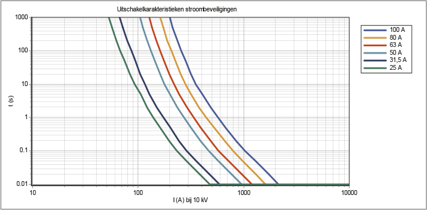In middenspanningsnetten worden smeltveiligheden het meest toegepast als kortsluitbeveiliging bij distributietransformatoren en soms voor beveiliging van uitlopers in het 10 kV-net. Dit is economisch aantrekkelijker dan de toepassing van vermogenschakelaars. Bovendien vragen smeltveiligheden minder ruimte. Bij het kiezen van de juiste smeltveiligheid moet rekening worden gehouden met de inrush stroom die optreedt bij het inschakelen van een onbelaste transformator. In de praktijk zal men daarom de waarde van de smeltveiligheid op 1,5 tot 2,5 maal de nominale waarde van de transformatorstroom kiezen.
Bij motoren worden de smeltveiligheden door de aanloopstromen vaak zwaar belast. Een ongewenste afschakeling tijdens het aanlopen kan hiervan het gevolg zijn. Dit kan worden voorkomen door een smeltveiligheid te kiezen, waarvan de smeltstroom groter is dan de aanloopstroom. Tevens zijn de factoren aanlooptijd en het aantal inschakelingen per tijdseenheid van belang.
In een zwevend net zal in het geval van een aardfout een aardfoutstroom gaan lopen, waarvan de grootte wordt bepaald door de capaciteit van het net. Samen met de belastingstroom kan de stroom door de smeltveiligheid dan een waarde bereiken die ligt tussen de minimum smeltstroom en de minimum onderbrekingsstroom. Stromen tussen deze twee waarden bevinden zich in het gebied waarbinnen de afschakeling onzeker is, indien General Purpose en Back-up smeltveiligheden zijn toegepast. Als deze situatie een grote kans van optreden heeft, dan zullen Full Range smeltveiligheden moeten worden toegepast of moet er een andere oplossing gezocht worden met bijvoorbeeld een vermogenschakelaar.
Sommige uitvoeringen van smeltpatronen hebben een uitschakel- of meldermechanisme. Daarbij wordt na het doorsmelten een slagstift naar buiten gestoten. De verplaatsing van deze slagstift kan worden gebruikt voor signalering of voor het tot uitschakeling brengen van een driefasige lastscheider of vermogenschakelaar. Dit zorgt ervoor dat in het onzekere gebied, waarin niet alle smeltveiligheden zullen doorsmelten, toch een driefasige afschakeling plaatsvindt.
In het gebied dat ligt tussen de nominale en de minimum smeltstroomwaarde kunnen de stromen door een smeltveiligheid moeilijk worden geblust. Hierbij doet zich een sterke warmteontwikkeling voor met het bijkomende gevaar dat zich in de smeltveiligheid te veel warmte ontwikkelt. Dit levert de kans op explosie van de smeltveiligheid of de kans op zelfontbranding van de installatie, waarin die smeltveiligheid is opgenomen. Dit komt in de praktijk af en toe voor.
Met uitzondering van de Full-range patronen zijn MS-smeltveiligheden in het algemeen minder geschikt als overbelastingsbeveiliging en beter geschikt als kortsluitbeveiliging.
Een probleem van smeltveiligheden is de warmteontwikkeling. Bij vermogens hoger dan 630 kVA (36 A bij 10 kV) warmen de MS-smeltpatronen teveel op. De warmte neemt kwadratisch toe met de stroom (I2R). Hierdoor kunnen de houders van de installatie in een netstation, bijvoorbeeld een Magnefix, thermisch overbelast raken. Zodoende wordt in het geval dat het vermogen van de aansluiting groter dan 630 kVA is, bij voorkeur gebruik gemaakt van een vermogenschakelaar en beveiligingsrelais. Er is ook een mogelijkheid om voor zwaardere MS-smeltpatronen te kiezen. Hierdoor ontstaan er echter problemen met de selectiviteit met de beveiligingen in de LS-strengen. Daarom wordt voor vermogens groter dan 630 kVA gekozen voor beveiligingen met vermogenschakelaars waardoor de beoogde selectiviteit behouden blijft.
In een smeltveiligheid kan de kortsluitstroom binnen zeer korte tijd worden onderbroken. De tijdsduur is afhankelijk van de energie die nodig is om de patroon bij kortsluiting te doen doorsmelten. Door de constructie van de patroon wordt de stroom begrensd op een waarde die lager ligt dan de te verwachten topwaarde (prospectieve kortsluitstroom). Daarna zal de stroom snel naar nul afnemen. De doorgelaten maximale waarde van de stroom wordt de kapstroom genoemd. De kapstroomkromme geeft het verband weer tussen de hoogte van de doorgelaten stroom en de hoogte van de prospectieve kortsluitstroom door de smeltveiligheid. De prospectieve kortsluitstroom is de waarde van de stroom die in geval van kortsluiting zou gaan lopen indien er geen beveiligingscomponent in het circuit zou zijn opgenomen. Figuur 6.2 illustreert dit.
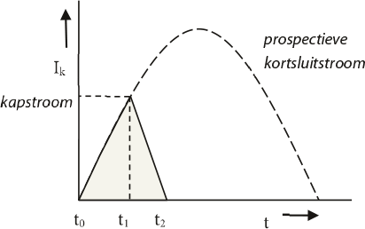Op tijdstip t0 treedt de kortsluiting op. Wanneer er geen beveiligingscomponent zou zijn geïnstalleerd, zou de volledige prospectieve kortsluitstroom gaan lopen (gestippelde lijn). Bij toepassing van een smeltveiligheid gebeurt het volgende.
De algemene benaming van een beveiligingsapparaat dat op basis van een meting een uitschakelcommando aan een vermogenschakelaar geeft, is beveiligingsrelais of, kortweg, relais. Een relais wordt toegepast voor die situaties dat de beveiliging moet reageren op andere grootheden dan alleen de stroom die gedurende een bepaalde tijdsduur vloeit of als een andere onderbrekingskarakteristiek moet worden toegepast dan die van een smeltveiligheid. Afhankelijk van de grootheid die gemeten moet worden staan verschillende soorten beveiligingsrelais ter beschikking. Een beveiligingsrelais is opgebouwd uit drie basiselementen.
Figuur 6.3 geeft het schematische overzicht van de basisopbouw van een beveiligingsrelais. Het meetelement zorgt voor een omzetting van de primair gemeten grootheid in een signaalsoort en een signaalwaarde, die in het vergelijkingselement van het beveiligingscircuit vergeleken kunnen worden. In het vergelijkingselement worden de gemeten waarden vergeleken met de ingestelde waarden.
Bij overschrijding van één waarde, of een combinatie van ingestelde waarden, gedurende een tijdsinterval dat langer is dan een ingestelde tijdsduur, wordt door het besliselement een uitschakelcommando gegeven.
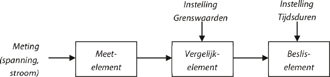Van een relais bestaan verschillende uitvoeringsvarianten. Beveiligingsrelais worden los van hun meetfunctie in twee hoofdsoorten ingedeeld.
Elektromechanische relais zijn meestal robuust uitgevoerd. Ze bevatten een aantal onderdelen zoals ankers, ferrarisschijven, kleine synchrone motoren of draaispoelrelais die bewegen door de invloed van magnetische velden. Elektromechanische relais zijn vooralsnog de meest voorkomende beveiligingsapparaten in de netten. Door de snelle ontwikkelingen in de elektronica worden bij vervanging statische relais (zie verderop) toegepast. De relais worden gebruikt in het primaire en secundaire circuit.
Het primair beveiligingsrelais is een relais dat eenvoudige beveiligingstaken verricht, zoals bijvoorbeeld het bewaken van de maximum stroom/tijd, al dan niet gecombineerd met een thermische functie. Het relais is opgenomen in het primaire circuit bij de vermogenschakelaar. De energie voor het functioneren van het relais wordt rechtstreeks betrokken uit het net.
Een veelvuldig toegepast relais is het secundair beveiligingsrelais. Dit relais wordt in de meeste gevallen aangesloten op meettransformatoren (stroom- en/of spanningstransformatoren). Deze meettransformatoren zorgen voor een reductie van hoge spanningen en grote stromen naar standaardwaarden, die gebruikt kunnen worden als ingangsignaal voor de verschillende beveiligingssystemen. De meettransformatoren zorgen tevens voor een scheiding tussen de primaire installatie met hoge spanning en de op laagspanningsniveau werkende, secundaire beveiligingscircuits. Het secundaire relais heeft voor zijn functioneren hulpenergie nodig.
Deze relais worden vanaf 1960 toegepast. De term ‘statisch’ impliceert dat deze relais geen bewegende delen hebben die de relaiskarakteristiek bepalen. Deze taak wordt geheel door de elektronica verzorgd. De meetgrootheden worden omgezet in een signaal van een zodanige soort en grootte, dat ze verwerkbaar zijn door het elektronische deel van het relais. Hier worden twee typen onderscheiden.
In dit relais worden de grootheden stroom en/of spanning omgezet in een analoog signaal en daarna (meestal) gelijkgericht. Het zo verkregen signaal wordt door een elektronische schakeling verwerkt en vervolgens aan het vergelijkingsorgaan of de detectieschakeling toegevoerd, waarna het zo nodig een uitschakelcommando verzorgt. Dit type relais heeft hulpenergie uit het net nodig.
Het microprocessorrelais verschilt met de andere relais doordat de ingangsgegevens, zoals stroom en spanning, worden omgezet in digitale grootheden. De processor berekent vervolgens of er een overschrijding plaatsvindt van de maximale of minimale grenswaarde, waarna eventueel een uitschakelcommando volgt. Vanwege de flexibiliteit en de grote rekenkracht van moderne processors, waarvan er meerdere in een relais zijn aangebracht, kan een groot aantal functies in een enkel relais worden gecombineerd.
In de praktijk worden geen nieuwe elektromechanische relais meer toegepast. Hiervoor zijn de elektronische relais in de plaats gekomen. Bij nieuwbouw of renovatieprojecten worden microprocessorgestuurde beveiligingen toegepast. Betrouwbaarheid, energieverbruik en werkingssnelheid zijn vergelijkbaar aan die van elektronische relais, maar de mogelijkheden voor aanvullende toepassingen en berekeningen, die met behulp van de digitaal beschikbare gegevens mogelijk worden, zijn groter. Zo kunnen beveiligingskarakteristieken worden aangepast en kunnen deze digitale gegevens na een gebeurtenis worden uitgelezen.
Beveiligingsrelais krijgen hun informatie uit meettransformatoren. Zij transformeren de hoge spanningen en grote stromen naar waarden die de relais verwerken kunnen. Zij zorgen tevens voor de isolatie tussen het hoogspanningsnet en de secundaire installatie.
Meettransformatoren moeten voldoen aan specifieke eisen, bijvoorbeeld ten aanzien van het isolatieniveau, de mate van verzadiging bij het meten van kortsluitstromen en de nauwkeurigheid waarmee wordt gemeten. De nauwkeurigheidseisen zijn in het algemeen hoog.
Stroomtransformatoren voor de beveiliging kan men herkennen aan de aanduiding ‘P’ (protection), bijvoorbeeld 5P20. Dit betekent dat de nauwkeurigheid 5% is bij een overstroomfactor van 20. De overstroomfactor is de verhouding van de primaire kortsluitstroom en de primaire nominale stroom van de stroomtransformator. De nauwkeurigheid wordt alleen gehaald indien de stroomtransformator door het relais of een ander beveiligingsapparaat belast wordt met het nominale vermogen waarop hij ontworpen is.
De belasting van een stroomtransformator wordt gevormd door het beveiligingstoestel en het verlies in de meetleidingen. Doorgaans bedraagt het nominale vermogen van een stroomtransformator 15 tot 20 VA. Is de belasting lager dan nominaal dan neemt de overstroomfactor toe. Dit is meestal het geval bij statische relais. Deze hebben in vergelijking met de elektromechanische relais een relatief laag eigen verbruik. Een voorbeeld van de aanduiding van een stroomtransformator is 5P20, 30 VA, 2500/5A, hetgeen betekent:
Een stroomtransformator waarop geen belasting is aangesloten, moet worden kortgesloten om beschadiging te voorkomen. De secundaire winding mag niet geopend zijn. Bij een open secundaire winding vindt namelijk geen compensatie van de flux in de transformatorkern plaats en raakt de kern sterk in verzadiging, waardoor deze kan verbranden.
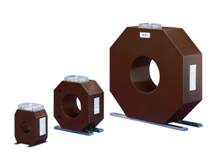Het werkingsprincipe van de spanningstransformator is gebaseerd op dat van een gewone vermogenstransformator met twee wikkelingen. De hoge primaire spanning wordt getransformeerd naar een secundaire spanning van 100 V of 100/√3 V.
Het bijzondere van spanningstransformatoren voor beveiligingsfuncties is dat verlangd wordt dat deze ook bij zeer lage spanningen een aanvaardbare kleine overzetfout vertonen. Dit is noodzakelijk omdat bij kortsluitingen de spanning in het net tot zeer lage waarden kan dalen. Spanningstransformatoren voor beveiligingsfuncties worden aangeduid met de klassen 3P en 6P. Dit wil zeggen dat de overzetfout bij 5% van de nominale spanning en bij de hoogste spanning die in het elektriciteitsnet kan voorkomen (tot 1,9 · Unom) niet groter mag zijn dan 3% respectievelijk 6%.
Het meest toegepaste beveiligingssysteem is de maximaal stroom-tijdbeveiliging (MST). Deze beschermt het elektriciteitnet tegen de gevolgen van een te hoge stroom door het circuit. Bij deze beveiliging wordt onderscheid gemaakt tussen:
Deze methode van beveiligen is eenvoudig, betrouwbaar en goedkoop. De MST is onderdeel van het drietal: stroomtransformator – relais – vermogenschakelaar. De stroom van het primaire circuit wordt door de stroomtransformator omgezet naar het lagere stroomniveau van het relais. Vervolgens wordt de stroom door het relais beoordeeld. Indien de gemeten stroom hoger is dan een ingestelde waarde, zal het relais de vermogenschakelaar opdracht geven uit te schakelen.
De MST kan ook als back-up beveiliging voor weigerende achterliggende vermogenschakelaars en beveiligingen worden ingezet. Voor de werking is geen communicatie benodigd.
Naast deze voordelen zijn er ook nadelen. Zo is de MST alleen toepasbaar in straalvormig bedreven netten, waarbij de stroom in één richting van onderstation naar de uiteinden van het net vloeit. Bovendien worden door de tijdstaffeling, die nodig is om de selectiviteit in radiale netten te verkrijgen, de afschakeltijden groter, naarmate de streng dichter bij het onderstation ligt.
De onafhankelijke maximaal stroom-tijdbeveiliging geeft een uitschakelcommando aan een vermogenschakelaar van de streng wanneer het ingangssignaal van het relais de ingestelde waarde overschrijdt (de gemeten waarde is groter dan de ingestelde waarde) en de tijdsduur van de overschrijding langer is dan de op het beveiligingsrelais ingestelde tijd.
Daalt het ingangssignaal onder de ingestelde grenswaarde voordat de ingestelde tijd is verlopen, dan valt het relais terug in zijn normaalpositie en volgt er geen uitschakelcommando. Het relais geeft wel een indicatie dat het is aangesproken.
De uitschakeltijd is onafhankelijk van de grootte van de stroom. De meeste onafhankelijke maximaal stroom-tijdrelais hebben de mogelijkheid tot instelling van één of meer stroomgrenzen met bijbehorende uitschakeltijden. Veelal hebben de relais ook een instelmogelijkheid voor een stroomgrenswaarde, die tot directe uitschakeling leidt. De uitschakeltijd is dan gelijk aan de reactietijd van het relais (ongeveer 30 ms) en die van de vermogenschakelaar (40 tot 80 ms). Doel hiervan is het beperken van de schade bij grote kortsluitstromen.
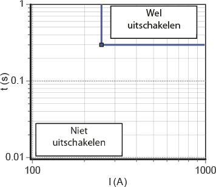Figuur 6.6 geeft de karakteristiek van het onafhankelijk maximum stroomtijdrelais, waarin de ingestelde stroomwaarde 250 A en de uitschakeltijd 0,3 s is.
Bij dit type beveiliging is de uitschakeltijd afhankelijk van de stroomsterkte: hoe groter de stroom, hoe sneller afschakeling volgt. Ook de smeltveiligheid heeft deze eigenschap. Het grote voordeel van een beveiliging met AMT-relais is dat door het snelle afschakelen bij grote stromen de installatie beter beveiligd wordt tegen grote kortsluitstromen. Het verkrijgen van selectiviteit tussen achter elkaar geschakelde beveiligingstoestellen is moeilijker dan bij een OMT-relais. Bij lage kortsluitstromen kan de belastingstroom (de voorbelasting) de werking beïnvloeden.
Het uitschakelkarakter maakt dit relais zeer geschikt voor het beschermen van motoren, transformatoren en kabels. Figuur 6.7 illustreert de karakteristiek van een afhankelijk maximaal stroom-tijdrelais, waarin de ingestelde stroomwaarde (I>) gelijk is aan 250 A.
Zowel het OMT als het AMT relais kunnen ook voorzien worden van een begrenzing, aangegeven met I>>. Deze begrenzing zorgt ervoor dat boven een bepaalde stroomwaarde het relais sneller een uitschakelcommando geeft dan het op grond van de karakteristiek zou doen. Figuur 6.8 illustreert dit voor een waarde van I>> gelijk aan 1000 A en t>> gelijk aan 0,3 s. In feite is dit een combinatie van een afhankelijk en een onafhankelijk relais.
Indien in een radiaal bedreven net meerdere beveiligingen achter elkaar worden toegepast, moet vanwege de gewenste selectiviteit de staffeltijd van de beveiligingen van het uiteinde van het net naar de voedingsbron toe oplopen. De insteltijden van twee opeenvolgende relais moeten zodanig zijn dat het relais dat zich het dichtst bij de fout bevindt als eerste het uitschakelcommando geeft. Weigert de vermogenschakelaar die door het relais wordt geactiveerd, dan zal een voorliggende beveiliging iets later in de tijd alsnog de voorliggende vermogenschakelaar activeren. Deze tweede vermogenschakelaar met beveiliging fungeert hierbij als back-up van de weigerende schakelaar. Dit geldt niet alleen voor twee opeenvolgende relais op hetzelfde spanningsniveau, maar ook voor twee beveiligingen aan weerszijden van een transformator. Zo moet het relais aan de primaire zijde van een distributietransformator selectief zijn met de smeltveiligheid aan de secundaire zijde.
Bij het staffelen van de tijdinstellingen moet rekening gehouden worden met de eigen schakeltijd van de vermogenschakelaar, die ongeveer 40 tot 80 ms is. Rekening houdend met vele onzekerheden in het beveiligingscircuit zoals de spreidingen in de uitschakeltijden, wordt bij het staffelen van de tijd in circuits met elektromechanische relais een marge van 0,3 tot 0,5 s aangehouden. Voor statische relais zou een kleinere marge kunnen worden aangehouden. Figuur 6.9 illustreert de tijdstaffeling van twee relais. Hierin is ‘AMT-relais 2’ dichter bij de voeding geplaatst dan ‘AMT-relais’, hetgeen tot uiting komt doordat van de karakteristiek van ‘AMT-relais 2’ zowel de stroom- als de tijdinstellingen groter zijn dan van ‘AMT-relais’. Bovendien is te zien dat de tijdstaffeling voor lage stroomwaarden het grootst is. Voor de selectiviteit is het belangrijk dat de marge voor alle afschakeltijden in de karakteristiek voldoet en dat de karakteristieken elkaar niet kruisen.
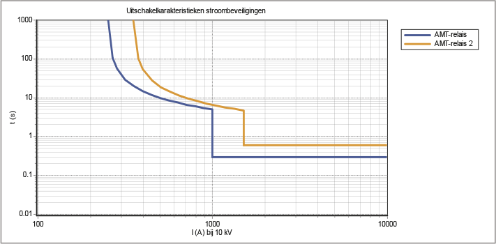Bij het instellen van de beveiligingen kan worden gekozen uit een grote hoeveelheid mogelijkheden. Voor de tijdstaffeling moet eerst een normkarakteristiek worden gekozen. In de internationale standaards is in IEC 60255 een aantal normkarakteristieken gedefinieerd. Deze karakteristieken zijn opgenomen in tabel 6.1.
Normkarakteristiek |
Standard inverse (SI) |
Very inverse (VI) |
Extremely inverse (EI) |
Functie |
Hierin is Ik de optredende kortsluitstroom en I> de ingestelde stroomwaarde. De drie normkarakteristieken worden getypeerd door de steilheid van hun hellingen: standard inverse (minst steile), very inverse (steiler) en extremely inverse (steilste). Deze karakteristieken zijn vaste eigenschappen van oude elektromechanische relais, maar kunnen ook bij moderne statische relais ingesteld worden. Van de inverse karakteristiek moet eerst het aanspreekpunt (pick up) ingesteld worden. Dit is de waarde van de stroom waarboven de timer begint te lopen. Hierna kan de afschakeltijd ingesteld worden, indien wordt afgeweken van de normkarakteristieken. Figuur 6.10 illustreert de drie normkarakteristieken.
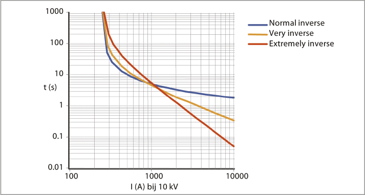In de meeste gevallen voldoet een relais met een standaard inverse karakteristiek. Indien echter geen voldoende selectiviteit kan worden verkregen, kan wellicht voor een very inverse of een extremely inverse karakteristiek gekozen worden. Very inverse relais zijn met name geschikt voor het geval dat de kortsluitstroom snel afneemt bij toenemende afstand van de bron. Dit is het geval bij een substantiële toename van de impedantie bij de toenemende afstand.
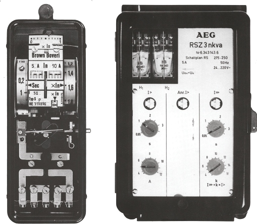Naast de standaard MST bestaat er een soort, waarbij ook de spanning wordt gemeten. Hierdoor kan de richting van de stroom bepaald worden. Dit wordt een energierichting (ER) beveiliging genoemd. In het middenspanningsnet is het niet meer vanzelfsprekend dat de klant een pure belasting is. Door decentrale opwekking (DCO) gaan stromen steeds vaker in andere richtingen lopen dan de gebruikelijke, van de bron naar de afnemer. Ook in het geval van parallelle circuits is het belangrijk om op grond van de stroomrichting al dan niet een uitschakelcommando te geven.
In principe bestaat de energierichtingsbeveiliging uit een combinatie van een maximaal stroom-tijdrelais en een richtingrelais. Het MST kan onafhankelijk of afhankelijk zijn. Dit relais bepaalt of de stroom boven de ingestelde waarde ligt en bepaalt het moment waarop een eventuele uitschakeling plaatsvindt. Het richtingsrelais bepaalt de richting van de stroom aan de hand van de stroom en de spanning. Als de stroomvector zich in de voorwaartse richting bevindt, geeft het richtingsrelais het uitschakelcommando van het MST door. Is de stroom achterwaarts, dan verhindert het richtingsrelais het uitschakelcommando.
In figuur 6.12 zijn de spanningsvectoren Va, Vb en Vc van de drie fasen weergegeven, alsmede de stroomvector Ia van fase a. Er zijn veel manieren denkbaar om de stromen en spanningen te meten. Bij een relais is de ‘90° Quadrature Connection’ de standaard aansluitmethode. Bij deze methode wordt voor beveiliging van fase a de fasestroom Ia en de gekoppelde spanning V bc gebruikt. Op deze manier is een voldoende grote spanningsvector voorhanden, ook al daalt de spanning in de a-fase bij een kortsluiting tot nul. Vervolgens wordt de gekoppelde spanning Vbc gedraaid met een hoek die de karakteristieke hoek RCA (Relay Characteristic Angle) wordt genoemd. De gemeten en gedraaide spanningsvector wordt aangeduid met V’bc. Figuur 6.12 illustreert dit voor een RCA van 45°. Op deze manier wordt de maximale gevoeligheid van het relais bereikt indien de stroom met een hoek van 45° (= 90° – RCA) na-ijlt op de fasespanning.
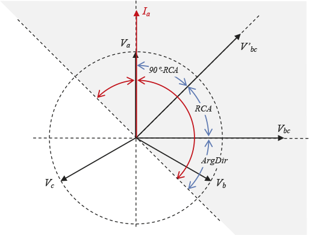De maximale gevoeligheid van het relais wordt bereikt als de gemeten stroom dezelfde hoek heeft als de spanningsvector V’bc. Dat is in figuur 6.12 het geval als de stroomvector Ia met een hoek van 90° – RCA, in dit geval 45°, na-ijlt op de fasespanning Va van fase a. De kleinste gevoeligheid wordt bereikt als de stroomvector Ia 45° voorijlt op de fasespanning Va van fase a of 135° na-ijlt. In dat geval staat de stroomvector namelijk haaks op de spanningsvector V’bc. De lijn die een hoek van 90° maakt met de spanningsvector V’bc wordt de ‘zero torque line’ genoemd.
Bij een voorwaarts gericht richtingrelais vindt afschakeling plaats indien de stroomvector zich bevindt in het grijze gebied van figuur 6.12, dus wanneer de stroom maximaal 45° voorijlt op de spanning of maximaal 135° na-ijlt. Bij moderne relais kan de karakteristieke hoek RCA worden ingesteld, waardoor ook de zero torque line ingesteld kan worden. In feite komt dit neer op een cos(φ)-correctie voor de te beveiligen richting.
Stroom- en tijdstaffeling functioneert alleen goed, als de stroom door een netgedeelte altijd in dezelfde richting loopt. Is dit niet het geval, dan kunnen door de toepassing van richtingrelais alsnog maximaal stroom-tijdrelais worden toegepast. Maximum stroom-tijdrichtingrelais worden meestal toegepast bij parallelle kabels. Een kortsluiting in één van de parallelle kabels wordt gevoed vanuit de voedende zijde en ook vanuit de parallelle kabel. Het is niet mogelijk om deze situatie selectief te beveiligen met ongerichte MST-beveiligingen.
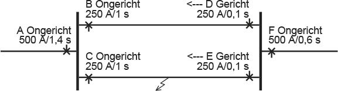Figuur 6.13 geeft een voorbeeld van toepassing van energierichtingrelais. Een gedeelte van een net met twee parallelle circuits wordt vanuit A gevoed. Aan de voedende zijde van twee parallelle circuits zijn ongerichte OMT-relais (B en C) toegepast die bij een hogere stroom dan 250 A na 1 s een uitschakelcommando zullen geven. Aan de andere zijde van de twee parallelle circuits zijn energierichtingrelais (D en E) toegepast, die bij een hogere stroom dan 250 A na 0,1 s een uitschakelcommando zullen geven. Bij een kortsluiting in kabel C-E zal de kortsluiting door beide parallelle circuits gevoed worden en zullen de beveiligingen in A, B, C en E aanspreken. De beveiliging in E zal na 0,1 s een uitschakelcommando geven waarna de kortsluiting niet meer via B gevoed wordt. Beveiliging B zal dan ook geen uitschakelcommando geven. De kortsluiting wordt nog wel via C gevoed. De beveiliging in C zal na 1 s een uitschakelcommando geven. Deze situatie is selectief beveiligd, dankzij de richtingrelais.
Moderne statische relais zijn voorzien van vele logische in- en uitgangen. Met behulp van een communicatieverbinding die twee relais aan beide zijden van een te beveiligen object, zoals een kabelverbinding, verbindt, kunnen de beveiligingsacties (veelal afschakelen) worden beïnvloed.
Een van de toepassingen is het blokkeren van het relais. Een beveiliging die een kortsluiting detecteert buiten zijn te beveiligen zone, kan een blokkeersignaal sturen naar de beveiliging aan de andere zijde van het te beveiligen object. Figuur 6.14 illustreert dat Beveiliging 1 een blokkeersignaal stuurt naar Beveiliging 2 indien de kortsluiting zich in achterwaartse richting van Beveiliging 1 bevindt.
Een andere toepassing is het versnellen van het afschakelen door een ander relais. Als in figuur 6.15 Beveiliging 1 een kortsluiting detecteert in de voorwaartse richting zal deze aanspreken en een afschakelcommando geven. In een vermaasde netstructuur moet deze fout ook door Beveiliging 2 worden afgeschakeld. Indien Beveiliging 1 een versnellingssignaal aan Beveiliging 2 geeft, is de fout snel geïsoleerd. Bij een distantiebeveiliging wordt dit schema voor het verkorten van de afschakeltijden van een volgende zone ook wel meeneemschakeling genoemd.
De werking van de differentiaalbeveiliging is gebaseerd op het feit dat de som van de stromen die naar een object toevloeien in ongestoorde situatie altijd gelijk is aan nul. Een kortsluiting in het object leidt ertoe dat deze som van de stromen niet meer gelijk aan nul is. Bij een object met één ingaand stroomcircuit en één uitgaand stroomcircuit heeft de stroom die erin vloeit een andere waarde dan de stroom die eruit vloeit. Door de stromen aan de ingang en aan de uitgang met elkaar te vergelijken kan een kortsluiting worden gedetecteerd. In het geval dat beide uiteinden dicht bij elkaar zijn gelokaliseerd is dit eenvoudig te realiseren, maar bij het beveiligen van een kabel moet voor communicatie gezorgd worden. Differentiaalbeveiliging wordt toegepast bij transformatoren, lijnen, kabels en railsystemen.
Figuur 6.16 en figuur 6.17 illustreren het principe van de differentiaalbeveiliging. De differentiaal beveiliging sommeert de stromen vanuit alle meetpunten. Indien de meetfout ten gevolge van de stroomtransformatoren buiten beschouwing wordt gelaten, is in een gezonde situatie de som van de stromen gelijk aan nul. In een gestoorde situatie is de som van de stromen niet meer gelijk aan nul en wordt een uitschakeling geïnitieerd. Een te grote meetfout ten gevolge van de stroomtransformatoren kan hetzelfde effect geven. De stroomtransformatoren van de verschillende meetpunten moeten daarom voor de stroomoverdracht zoveel mogelijk over dezelfde eigenschappen beschikken. Het voordeel van de differentiaalbeveiliging is dat de uitschakeltijd bij een fout in de te beveiligen zone vrijwel onafhankelijk is van de plaats en type van de fout. De uitschakeltijd is gelijk aan de eigentijd van de beveiliging en de vermogenschakelaar, circa 40 tot 80 ms.
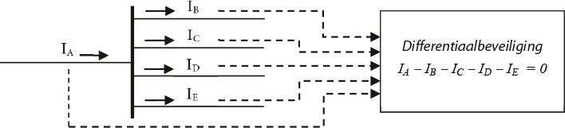Figuur 6.16 toont de beveiliging van een railsysteem. Van alle inkomende en uitgaande kabelverbindingen van een rail worden de stroomwaarden, afkomstig van de stroomtransformatoren, op de differentiaalbeveiliging aangesloten. In de differentiaalbeveiliging wordt de vectoriële som van deze waarden bepaald. Indien consequent met de definitie van de stroomrichting is omgegaan (inkomend positief en uitgaand negatief), zal in de normale ongestoorde situatie de som van de stromen gelijk aan nul zijn. De beveiliging schakelt dan niet af.
Bij een kortsluiting op de rail zal een kortsluitstroom IF lopen. De vectoriële som van de stromen door de kabelverbindingen is dan niet meer gelijk aan nul, maar gelijk aan de kortsluitstroom. De differentiaalbeveiliging zal dan zonder tijdvertraging een afschakelcommando geven.
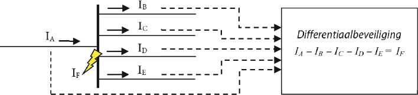Indien het te beveiligen object een kabelverbinding is, moet gezorgd worden voor communicatie tussen beide zijden. Dit zal tegenwoordig met een glasvezelverbinding gerealiseerd worden. Bij het beveiligen van een transformator moeten de stroomtransformatoren zodanig gekozen worden dat zij de overzetverhouding corrigeren. Bij het optellen van de stromen uit de primaire en secundaire circuits moeten zij immers betrokken zijn op eenzelfde spanningsniveau. Ook moet rekening worden gehouden met de schakelwijze van de transformator (ster-driehoek).
De differentiaalbeveiliging beveiligt een vast afgebakend gebied, dat de beveiligde zone wordt genoemd. In principe is hierdoor de selectiviteit van de differentiaalbeveiliging hoog. Bij het instellen van de beveiliging hoeft geen rekening gehouden te worden met andere beveiligingen.
De differentiaalbeveiliging wordt ook wel ingezet om parallelle kabelverbindingen te beveiligen als alternatief voor de beveiliging met richtingrelais.
Door middel van ‘dual slope’ bias techniek (zie figuur 6.18) is de differentiaalbeveiliging ongevoeliger gemaakt voor doorgaande kortsluitingen en meetfouten (zoals verzadiging) van de stroomtransformatoren. De gevoeligheid van de beveiliging is afhankelijk van een bias stroom. Voor kleine stromen is de bias klein. Naarmate de stroom toeneemt, wordt de bias groter. Figuur 6.18 illustreert dit.
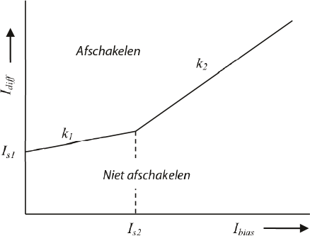De som van de gemeten stromen is Idiff. De beveiliging geeft een afschakelcommando indien deze waarde groter is dan de corresponderende waarde van de biaskarakteristiek. De meting van n stromen is gegeven door de absolute waarde van de vectoriële som van de stromen (alle gericht naar het te beveiligen object toe):
[ |
6.1 |
] |
De bijbehorende bias is gegeven door de som van de absolute waarden van de stromen, gedeeld door het aantal metingen:
[ |
6.2 |
] |
Het afschakelcommando wordt gegeven indien:
Voor Ibias < Is2 :
Voor Ibias ≥ Is2 :
Om ongevoelig te zijn voor de laadstroom van het circuit moet de instelling van Is1 tenminste gelijk zijn aan 2,5 maal de statische laadstroom van het circuit. Een andere mogelijkheid is dat de differentiaal beveiliging zelf de laadstroom weg filtert uit de gemeten stroomwaarde. De differentiaal beveiliging moet dan een ingang hebben voor een spanningstransformator. Bovendien moet de capaciteit van het circuit bekend zijn. De fabrikant geeft in de handleiding van de beveiliging vaak een aanbeveling voor de overige drie instellingen. Gebruikelijke waarden voor een langsdifferentiaalbeveiliging (voor een verbinding) zijn:
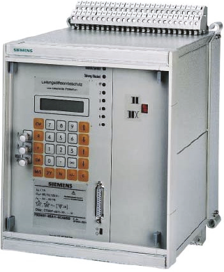Is2 = 2 pu (per unit; zie hoofdstuk 7)
k1 = 0,3
k2 = 1,5
De distantiebeveiliging wordt met name toegepast voor het beveiligen van hoogspanningslijnen en kabelverbindingen. De werking is gebaseerd op het bepalen van de impedantie van de verbinding op basis van de gemeten spanningen en stromen. De impedantie van de meetplaats tot een punt op de verbinding neemt recht evenredig toe met de afstand vanaf de meetplaats. Een kortsluiting wordt gedetecteerd vanwege de drastische reductie van de impedantie in de richting van de kortsluiting. Als de gemeten impedantie veel kleiner is dan de normale impedantie, is er sprake van een sluiting. De beveiliging spreekt aan bij het overschrijden van een ingestelde aanspreekstroom of bij het onderschrijden van een ingestelde aanspreekimpedantie. De impedantie wordt berekend uit het quotiënt van de gemeten spanning en de gemeten stroom. Hierdoor is de beveiliging per definitie richtingsgevoelig. De afstand van de meetplaats tot de foutplaats wordt als volgt bepaald:
[ |
6.3 |
] |
waarin:
ZX = Ugemeten / Igemeten
Zkabel : de impedantiewaarde van de kabel of lijn, ingesteld op de beveiliging
Het afschakelen door een distantiebeveiliging vindt plaats in stappen, trappen genoemd. De eerste trap, de sneltrap, geeft onvertraagd een uitschakelcommando indien de gemeten impedantie ZX kleiner is dan de eerste ingestelde impedantie, die gelijk is aan 85 tot 90% van de eerste te beveiligen sectie. Deze sectie is meestal de lengte van de te beveiligen kabel- of lijnverbinding (zie figuur 6.20). Een veiligheidsmarge van 10 tot 15% wordt aangehouden vanwege de mogelijkheid dat de kortsluiting nog enige impedantie heeft of vanwege onnauwkeurigheid van meettransformatoren en beschikbare gegevens van de impedantie van de verbinding. Om deze reden komt de waarde van Z1 meestal overeen met 85 tot 90% van de totale impedantie van de eerste te beveiligen sectie. Storingen tussen 85 tot 90% en 100% van de sectie zullen met enige tijdsvertraging door de tweede trap worden afgeschakeld.
De tweede trap wordt ingesteld op een waarde die weer 85 tot 90% van de impedantie van de volgende sectie bedraagt. Op deze manier is de tweede trap een back-up voor de eerste trap van de volgende beveiliging. Als een fout in de tweede verbinding niet door de bijbehorende beveiliging wordt afgeschakeld, zal de voorliggende beveiliging met tijdvertraging het afschakelcommando geven. Figuur 6.20 illustreert dit voor drie verbindingen met impedanties Z1, Z2 en Z3, die beveiligd worden door drie distantiebeveiligingen. Hierin zijn de afschakeltijden t1 tot en met t4 de afschakeltijden van de eerste tot en met de vierde trap.
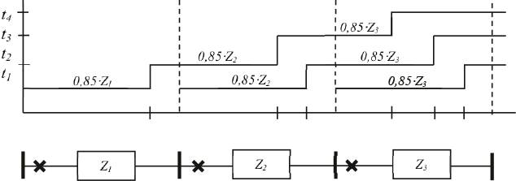In middenspanningsnetten is het aantal toegepaste trappen vaak beperkt tot 2. Zo is het gebruikelijk om Z2 in te stellen op 115%, zijnde 100% van het te beveiligen circuit plus 15% van de achterliggende verbinding.
Er is een eindtrap, die bij een distantiebeveiliging wordt ingesteld om hoogohmige fouten af te schakelen. De bijbehorende eindtijd is een langere afschakeltijd dan alle andere beveiligingen. De eindtrap dient als het ware als noodrem.
De distantiebeveiliging reageert op fouten aan weerszijden van het station. Zo is het ook mogelijk een achterwaartse trap in te stellen als back-up voor fouten in de voorliggende verbindingen.
Het meten en berekenen van de impedantie door de beveiliging moet nauwkeurig gebeuren. De basis is de meting van de spanningen en de stromen. Er zijn vele mogelijkheden om deze grootheden te meten. De keuze van de methode hangt af van de fasehoek die stroom en spanning met elkaar maken. In een statisch relais worden de faseverschuivingen gerealiseerd met behulp van de software, maar bij elektromechanische relais worden de faseverschuivingen gerealiseerd door middel van de aansluitmogelijkheden op het relais (zie ook de karakteristieke hoek van een relais in figuur 6.12). Een veel gebruikte methode maakt gebruik van de spanning in de gezonde fasen en de stroom in de betrokken fase. Voor de vier meest voorkomende kortsluitingen worden hierna de meetmethodes toegelicht. In de toelichting wordt gebruik gemaakt van de vectoren die spanningen en stromen beschrijven. Dit betekent dat er rekening wordt gehouden met de grootte (lengte) en de hoek van de vectoren. Bij het toepassen van de formules wordt complex gerekend.
Bij de driefasenkortsluiting maakt het niet uit of er contact wordt gemaakt met de aarde. De spanning op het kortsluitpunt is immers nul Volt. De distantiebeveiliging ziet op het meetpunt de drie fasespanningen, de drie gekoppelde spanningen en de drie fasestromen.
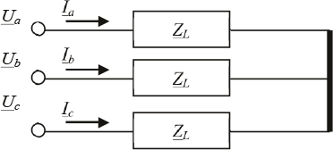Voor de gekoppelde spanning over fasen b en c geldt:
[ |
6.4 |
] |
Hieruit volgt voor de gemeten impedantie:
[ |
6.5 |
] |
Bij de tweefasenkortsluiting maakt het wel uit of er contact wordt gemaakt met de aarde. In het geval van een tweefasenkortsluiting zonder aardcontact wordt uitgegaan van de gekoppelde spanning over en de stromen in de betrokken fasen. Hieronder wordt de kortsluiting tussen fasen b en c toegelicht.
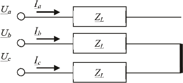Voor de gekoppelde spanning over fasen b en c geldt:
[ |
6.6 |
] |
Hieruit volgt voor de gemeten impedantie:
[ |
6.7 |
] |
Bij een kortsluiting met aardcontact is de fasespanning op de foutplaats gelijk aan nul Volt. Het is verleidelijk om aan te nemen dat de spanningsval van de meetplaats tot de foutplaats gewoon bepaald zou kunnen worden met het product van fase-impedantie en fasestroom. Echter, de stroom in het totale kortgesloten circuit wordt mede bepaald door de retourimpedantie, die weer afhankelijk is van het aantal aardelektrodes, de methode van aarding en de aardimpedanties. Als met deze factoren niet voldoende rekening wordt gehouden, zal de impedantiemeting niet correct zijn.
De spanningsval van het meetpunt tot aan de foutplaats is de som van de spanningsvallen in de componentnetwerken van het meetpunt tot aan de foutplaats. Voor nadere informatie over symmetrische componenten en deze aardfout wordt verwezen naar hoofdstuk 7 en hoofdstuk 10, tabellen 10.3 (kortsluittypen) en 10.4 (componentnetwerken voor kortsluittypen) en de daarbij behorende uitleg. Volgens de methode van symmetrische componenten zijn de spanningsval en de stroom in het kortgesloten circuit gegeven door:
[ |
6.8 |
] |
[ |
6.9 |
] |
De retourstroom op het meetpunt is gegeven door:
[ |
6.10 |
] |
Hierin zijn Ia, Ib en Ic de gemeten fasestromen en I1, I2 en I0 de stromen in de componentnetwerken. Er wordt gezocht naar een relatie tussen de spanning op het meetpunt en de fasestromen en de verhouding tussen de homopolaire en de normale impedantie van de verbinding. Hierom wordt een complexe factor K geïntroduceerd, die de verhouding tussen ZL,0 en ZL,1 vastlegt.
[ |
6.11 |
] |
Invullen van de vergelijkingen voor K en voor Ia in de spanningsvergelijking levert:
[ |
6.12 |
] |
Tenslotte invullen van de vergelijking voor de retourstroom In in deze spanningsvergelijking levert:
[ |
6.13 |
] |
In de beveiligingstechniek wordt ook wel de factor KN gebruikt:
[ |
6.14 |
] |
Aangezien de homopolaire impedantie ZL,0 gelijk is aan ZL,1 + 3ZE, vereenvoudigt de vergelijking voor de factor KN in:
[ |
6.15 |
] |
Hierin is ZE de aard- of retourimpedantie. Een distantierelais meet de juiste impedantie door een complexe factor KN van de retourstroom In op te tellen bij de fasestroom Ia. Deze methode wordt ‘Residual Compensation’ genoemd (NPAG, 2002).
In het geval van een tweefasenkortsluiting met aardcontact wordt uitgegaan van de spanningsval en de stromen in de betrokken fasen. De retourstroom wordt met de KN-factor in rekening gebracht. Hieronder wordt de kortsluiting tussen fasen b en c en aarde toegelicht.
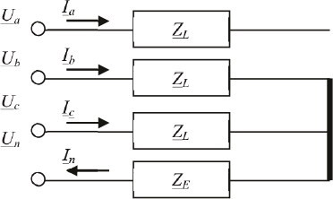Voor de fasespanning over fase b geldt:
[ |
6.16 |
] |
Hieruit volgt voor de gemeten impedantie:
[ |
6.17 |
] |
In het geval van een eenfasekortsluiting met aardcontact wordt uitgegaan van de spanningsval en de stroom in de betrokken fase. De retourstroom wordt met de KN-factor in rekening gebracht. Hieronder wordt de kortsluiting tussen fase c en aarde toegelicht.
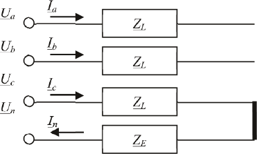Voor de fasespanning over fase c geldt:
[ |
6.18 |
] |
Hieruit volgt voor de gemeten impedantie:
[ |
6.19 |
] |
Een afschakelkarakteristiek wordt ook wel relaiskarakteristiek genoemd en beschrijft voor elke trap van de distantiebeveiliging bij welke waarde van R en X het relais een afschakelcommando moet geven. Numerieke relais meten de absolute foutimpedantie en bepalen aan de hand van de relaiskarakteristiek of zij een afschakelcommando moeten geven. Traditionele distantierelais doen dit iets anders: zij vergelijken de gemeten spanning met een berekende spanning, die afgeleid wordt van de gemeten stroom en de impedantie voor de betreffende zone. De relaiskarakteristieken worden geconstrueerd met cirkels en rechte lijnen in een R/X-vlak. Zo worden onderscheiden:
Er worden vele technieken toegepast in de beveiligingstechniek. Een van de eenvoudigste technieken maakt geen onderscheid in de hoek van de gemeten impedantie. De karakteristiek in het R/X diagram is een cirkel met het middelpunt in de oorsprong. De straal van de cirkel is de zone-instelling in Ohm. Het relais is niet richtingsgevoelig en zal een afschakelcommando geven voor alle uit de gemeten spanningen en stromen berekende impedanties die binnen de cirkel vallen; dus aan beide zijden van het knooppunt waar het relais is geïnstalleerd. Dit is in de meeste gevallen onvoldoende en daarmee niet wenselijk, zodat een richtingsgevoelig element, zoals beschreven bij het energierichtingrelais (paragraaf 6.1.6), wordt ingebouwd. Op deze wijze verandert de cirkelkarakteristiek in een halve cirkel. Figuur 6.25 illustreert dit voor een relais met drie trappen. Elke trap is ingesteld met een impedantie en een bijbehorende afschakeltijd. Het grijze gebied geeft het vlak aan waarbinnen een afschakelcommando mag worden gegeven. Als de gemeten impedantie kleiner is dan Z1, dan wordt op tijdstip t1 een afschakelcommando gegeven. Ligt de waarde van de gemeten impedantie tussen Z1 en Z2, dan wordt op tijdstip t2 een afschakelcommando gegeven.
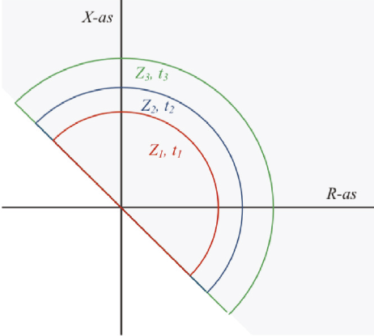Een bijzondere vorm van een cirkelvormige relaiskarakteristiek is die van het Mho-relais. De karakteristiek in het R/X-vlak is een cirkel waarvan niet het centrum maar de omtrek door de oorsprong gaat. Hiermee is een redelijke vorm van richtingsgevoeligheid ingebouwd. Deze relais zijn in het verleden veel toegepast.
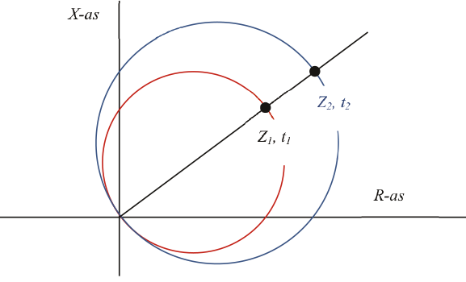Moderne microprocessorrelais kunnen worden ingesteld voor cirkel- en Mho-karakteristieken, waarmee zij de werking van traditionele relais simuleren. Met deze relais is het ook mogelijk de karakteristiek volgens een polygoon in te stellen. De polygoon is beschreven met rechte lijnen die elkaar zodanig kruisen dat zij een afgesloten gebied omsluiten. Het voordeel hiervan is dat alle instellingen onafhankelijk van elkaar gedaan kunnen worden, waardoor het relais veel beter toepasbaar is voor bijzondere gevallen.
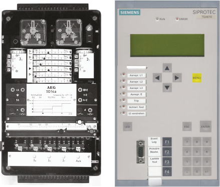Er zijn drie verschillende soorten spanningsbeveiliging:
Er is overspanning wanneer de spanning een waarde aanneemt die ver boven de nominale spanning uitkomt. Als zo’n overspanning niet onderbroken kan worden kan dit gevaarlijk zijn voor personen en kan het schade aanrichten aan elektrische apparatuur. Daarom moet in sommige gevallen spanningsbeveiliging toegepast worden.
Er is sprake van onderspanning wanneer de netspanning 35 tot 70% onder de nominale spanning is. Apparaten en motoren kunnen defect raken indien zij bij een te lage spanning in bedrijf blijven. In geval van een kortsluiting in het net zullen de aangesloten generatoren de kortsluiting voeden. Hierbij is het gedrag van de generator afhankelijk van de afstand van de generator tot de kortsluitplaats. De onderspanningsbeveiliging beveiligt de aangesloten machines door deze binnen korte tijd (ongeveer 0,2 s) af te schakelen.
Deze beveiliging spreekt aan wanneer de netspanning 70% of meer onder de nominale spanning zakt. De beveiliging schakelt de netspanning af en niet meer automatisch in. Dit is voor de veiligheid van personen. Als de voedingsspanning van een installatie weg valt, valt alle aangesloten apparatuur stil. Als de spanning bij automatische herinschakeling weer zou terugkeren, dan zou alle apparatuur in de installatie tegelijkertijd opstarten. Dit leidt veelal tot een overbelasting van het net en eventueel schade aan de apparatuur. Het onvoorzien uitschakelen en weer inschakelen is gevaarlijk omdat dit ook lichamelijk letsel van het bedienend personeel tot gevolg kan hebben. De nulspanningsbeveiliging voorkomt dit ongecontroleerde opstarten.
In de Netcode (Netcode, 2009) is opgenomen aan welke randvoorwaarden de beveiliging van de installatie van een klant moet voldoen. De Netcode beschrijft de randvoorwaarden voor alle aangeslotenen en geeft daarnaast aanvullende voorwaarden voor:
De randvoorwaarden voor alle aangeslotenen zijn globaal beschreven met betrekking tot de selectiviteit (Netcode, 2009, paragraaf 2.1):
Daarnaast zijn er aanvullende voorwaarden voor aangeslotenen op laag- en middenspanningsnetten. De middenspanningsnetten worden in de Netcode aangeduid als hoogspanningsnetten.
Indien in het net van de aangeslotene motoren geïnstalleerd zijn, worden eisen gesteld aan de nulspanningsbeveiliging. Om te voorkomen dat na een storing bij het herstellen van de spanning alle machines tegelijkertijd opstarten, wordt de voorwaarde gesteld dat er een nulspanningsbeveiliging geïnstalleerd is die ervoor moet zorgen dat niet meer dan 10 kW geïnstalleerd vermogen gelijktijdig wordt opgestart (Netcode, 2009, paragraaf 2.2).
Van alle productie-eenheden moeten de beveiligingen selectief zijn met die van de netbeheerder. De beveiliging van de generator en een vermogenselektronische omzetter met een vermogen groter dan 5 kVA moet in ieder geval op drie fasen voorzien zijn van (Netcode, 2009, paragraaf 2.4):
De beveiliging van een vermogenselektronische omzetter met een vermogen kleiner dan 5 kVA is in ieder geval voorzien van:
De aangeslotene moet zorgen voor een staffelplan met betrekking tot de beveiligingen, ter beoordeling van de netbeheerder (Netcode, 2009, paragraaf 2.3). Van alle aangesloten productie-eenheden moeten de beveiligingen selectief zijn ten opzichte van de beveiligingen in het net van de netbeheerder. De producenten zijn zelf verantwoordelijk voor adequate beveiligingen van de productie-eenheden tegen storingen die ontstaan in het net en extreme afwijkingen van spanning en frequentie.
Bij onderlinge aansluiting van netten stellen de netbeheerders na onderling overleg de toe te passen beveiligingsconcepten vast (Netcode, 2009, paragraaf 2.8). Het beveiligingsconcept van de transformator wordt bepaald door de beheerder van de transformator. De netbeheerders stellen elkaar de uitschakelcommando’s voor het uitschakelen van de vermogenschakelaars aan weerszijden van de transformator ter beschikking. De voor het overbrengen van deze commando’s benodigde verbindingen met toebehoren zijn eigendom van de eigenaar van de transformator. Instellingen van de beveiligingen, het type beveiliging en de inschakelvoorwaarden worden in de aansluitovereenkomst vastgelegd.
De aansluitingen worden beveiligd met smeltveiligheden, automaten of met beveiligingsrelais en vermogenschakelaars. Deze beveiliging bevindt zich bij de aansluiting vóór het overdrachtspunt (de meter). Aansluitingen kunnen kleinverbruikers zijn met een elektriciteitsaansluiting van 3x80 A of minder of grootverbruikers met een elektriciteitsaansluiting van meer dan 3x80 A. Bij de keuze van de beveiliging wordt uitgegaan van de indeling in de 7 aansluitcategorieën van de Tarievencode (Tarievencode, 2009, Bijlage A).
De standaard aansluitmethode voor aangeslotenen tot 1 x 6A is op de laagspanningskabel, hulpader of OV-kabel die deel uitmaken van het net van de netbeheerder. Het net wordt geschakeld door de netbeheerder, bijvoorbeeld voor de openbare verlichting. Deze installaties worden beveiligd met een smeltpatroon of een automaat in de aansluitkast, die zich bevindt in het aan te sluiten object.
De standaard aansluitmethode voor aangeslotenen tot 60 kVA is op de laagspanningskabel. Deze installaties worden beveiligd met een of meerdere smeltpatronen of een automaat in de aansluitkast, die zich bevindt in het aan te sluiten object. De klant kan kiezen uit een meerdere uitvoeringsvormen voor de aansluiting, zoals:
Als voorbeeld is de aansluiting van een 3x80 A kleinverbruiker gemodelleerd. De aansluiting bevindt zich achter 10 m aansluitkabel van het type 4x16 VGVMvKas/Al. De toegepaste smeltveiligheid is 80 A.
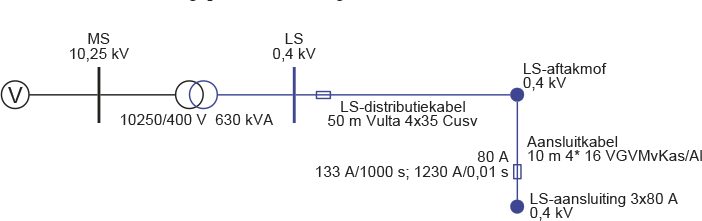De kortsluitstroom bij een kortsluiting direct na de meterkast is 5 kA. Volgens de karakteristiek van de smeltveiligheid wordt daarom een kortsluiting op knooppunt ‘LS-aansluiting’ zeer snel (minder dan 0,01 s) afgeschakeld.
De standaard aansluitmethode voor aangeslotenen vanaf 60 kVA tot en met 0,3 MVA is op het dichtstbijzijnde algemene LS-voedingspunt in het net van de netbeheerder (MS/LS-netstation). Deze installaties worden beveiligd met smeltpatronen of een automaat in de aansluitkast, die zich bevindt in het aan te sluiten object. De beveiliging heeft een nominale waarde van 3x80 tot 3x400 A.
De standaard aansluitmethode voor aansluitingen vanaf 0,3 MVA tot en met 3MVA is inlussen in het middenspanningsnet. De installatie bevindt zich in een ruimte van de aangeslotene. In deze grootverbruikersruimte bevinden zich onder andere twee scheiders en een vermogenschakelaar. Zie ook A.5.
Deze aansluiting wordt gerealiseerd door een transformatiestap aan te bieden en te meten op laagspanning. De installatie bevindt zich in een ruimte van de aangeslotene. In deze grootverbruikersruimte bevinden zich onder andere twee scheiders, een MS-beveiliging en een vermogenstransformator. De klant moet zijn installatie zodanig ontwerpen dat deze bestand is tegen de mechanische en thermische effecten die optreden door een overstroom. Er zijn drie standaardaansluitingen, afhankelijk van het aansluitvermogen:
De A.5a aansluiting (tot en met 630 kVA) wordt beveiligd met smeltpatronen aan de middenspanningszijde, net zoals de distributietransformatoren die het laagspanningsnet voeden. Aan laagspanningszijde van de transformator moet de klant zelf een beveiliging plaatsen tegen overbelasting en kortsluitstromen in zijn installatie. De beveiliging moet selectief zijn met de beveiliging van de netbeheerder. Indien de LS-beveiliging bestaat uit een laagspanningsautomaat, dan wordt deze meestal ingesteld met Ithermisch volgens:
[ |
6.20 |
] |
Waarin Snom,transformator het nominale vermogen van de transformator. De waarde van ULS is gelijk aan de minimale gekoppelde spanning aan de laagspanningszijde, zijnde 90% van de nominale spanning. De tijd is ingesteld op enkele seconden. De waarde voor I>> wordt ingesteld op 4 x Inom. De waarde van t>> is 0 s.
De A.5b aansluiting (tot en met 1000 kVA) wordt beveiligd met een beveiligingsrelais en een vermogenschakelaar aan de middenspanningszijde. De maximaal stroom-tijdbeveiliging wordt ingesteld volgens:
[ |
6.21 |
] |
Hierin is factorMS gelijk aan 1,5 en Snom,transformator het nominale vermogen van de transformator. De waarde van UMS is gelijk aan de minimale gekoppelde spanning aan de middenspanningszijde, zijnde 90% van de nominale spanning. De instelling van de afschakeltijd t> kan tussen 0,3 en 0,9 s liggen, afhankelijk van de instellingen bij de klant. De voorkeur gaat naar een zo kort mogelijke afschakeltijd, om de gevolgen van de spanningsdips in de streng te beperken.
De A.5 aansluiting (boven 1000 kVA) wordt beveiligd met een beveiligingsrelais en een vermogenschakelaar op het overdrachtspunt. Het achterliggende net van de klant kan vele uitvoeringsvormen hebben. Er kunnen meerdere transformatoren, motoren en generatoren voorkomen. Om die reden moet de beveiliging in nauw overleg met de klant vastgesteld worden. De beveiliging moet het MS-net van de netbeheerder beschermen tegen de risico’s van een fout in de klantinstallatie. Daarnaast moet de beveiliging in het overdrachtspunt selectief zijn met de beveiligingen in het MS-net en met de beveiligingen in het net van de klant.
In het MS-transportnet worden rail systemen met een groot vermogen (meer dan 2 MVA) meestal met meerdere kabels gevoed. Deze worden uitgelegd met een enkelvoudige storingsreserve zonder energieonderbreking, zodat het uitvallen van één kabel geen invloed heeft op de energielevering. De meest selectieve en snelle beveiliging voor een parallelle kabel is te realiseren met een langs differentiaal beveiliging. De back-up beveiliging is vaak een maximaal stroom-tijdbeveiliging in het onder-, regel- of schakelstation, die de kabel niet selectief afschakelt. De optie met een langs differentiaal beveiliging als hoofdbeveiliging geniet de voorkeur om een parallelle kabel te beveiligen. Hiervoor is communicatie noodzakelijk tussen de stations. Indien geen communicatie gerealiseerd kan worden, wordt een distantierelais met energierichtingsbeveiliging toegepast.
Het realiseren van aansluitingen van deze grootte is altijd maatwerk en is niet standaard voorgeschreven in de Tarievencode. Zie A.6.
Doorgaans worden MS/LS-transformatoren tot een vermogen van 630 kVA aan de primaire zijde met smeltveiligheden beveiligd. Transformatoren met grotere vermogens worden aan middenspanningszijde met een maximaalstroomtijdrelais in combinatie met een vermogenschakelaar beveiligd. Aan laagspanningszijde worden transformatoren beveiligd met smeltveiligheden of een automaat.
Bij het toepassen van smeltveiligheden aan middenspanningszijde moet worden gelet op:
Voor de beveiliging van een distributietransformator tot en met 630 kVA wordt veelal om financiële redenen gebruik gemaakt van smeltpatronen. De waarden voor de MS- en LS-smeltpatronen worden berekend met onderstaande formules:
[ |
6.22 |
] |
[ |
6.23 |
] |
Met:
UMS minimale gekoppelde spanning aan MS-zijde (0,9 x Unom,MS) ULS minimale gekoppelde spanning aan LS-zijde (0,9 x Unom,LS) factorMS 1,5 factorLS 1,1
De met deze formules berekende waarden voor de smeltpatronen aan MS- en LS-zijde, afgerond naar gebruikelijke waarden, zijn in tabel 6.2 vermeld.
Transformator (kVA) |
MS patroon (A) |
LS patroon (A) |
100 |
10 |
160 |
160 |
16 |
250 |
250 |
20 |
400 |
315 |
25 |
500 |
400 |
31,5 |
630 |
630 |
50 |
910 |
Aan de laagspanningszijde van de transformator worden bij voorkeur smeltpatronen aangebracht vanwege de veiligheid van personeel in het geval dat er een kortsluiting ontstaat. Door het gebruik van LS smeltpatronen wordt de kortsluitstroom beperkt (kapstroom), waardoor de dynamische krachten, die in de LS-verdeelinrichting bij de hoge kortsluitstromen optreden, worden beperkt. De kortsluitstromen aan LS-zijde worden namelijk door de MS smeltpatronen niet in het kapgebied gezien en daardoor zou bij een niet door LS smeltpatronen beveiligde verdeelinrichting het maximale dynamisch effect optreden. Nadeel van deze constructie is dat MS- en LS-smeltpatronen niet altijd selectief met elkaar gekozen kunnen worden (zie figuur 6.30). Hierdoor kunnen na een kortsluiting aan de LS-zijde verkeerde conclusies worden getrokken als de MS-beveiliging is aangesproken en als de LS-smeltveiligheid niet geheel is doorgebrand. Een eerste conclusie is dan dat er een interne sluiting in de transformator zit, terwijl de werkelijke oorzaak lager zit. Wel moet worden opgemerkt dat selectiviteit tussen de MS-smeltpatronen en de afgaande velden van de LS-verdeelinrichting wel te realiseren is.
De a-selectiviteit wordt geaccepteerd aangezien de a-selectiviteit alleen optreedt indien de fout zich bevindt in het afgesloten gebied van het netstation. De kans hierop is erg klein. Bovendien blijven de eventuele gevolgen van a-selectief afschakelen beperkt tot de transformator en de daarop aangeslotenen.
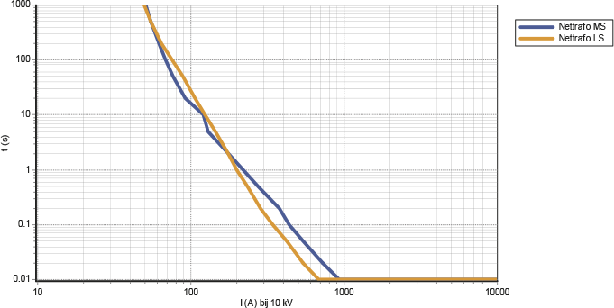Bij transformatoren met een nominaal vermogen vanaf 1000 kVA kunnen problemen ontstaan met de warmteontwikkeling door de stroom door de smeltveiligheden. Vooral in afgesloten ruimten kan deze warmteontwikkeling leiden tot een aanzienlijke temperatuurverhoging van meer dan 65 graden, waardoor isolatiematerialen kunnen beschadigen. Dit beperkt het gebruik van smeltveiligheden in een afgesloten ruimte.
Voor de beveiliging van nettransformatoren groter dan 630 kVA wordt een vermogenschakelaar met een maximaal stroom-tijdbeveiliging toegepast. De waarde voor I> wordt berekend met formule 6.22 voor de berekening van de MS-smeltpatroon. Tabel 6.3 geeft een overzicht voor de instellingen voor I > en I>>.
Transformator (kVA) |
I> (A), t>=0,5 s |
I>> (A), t>>=0 s |
750 |
65 |
1500 |
800 |
70 |
1500 |
1000 |
90 |
1500 |
1600 |
140 |
1500 |
Bij een transformator met een vermogen groter dan 630 kVA kan met smeltpatronen aan de middenspanningszijde geen selectiviteit meer worden bereikt met de beveiliging aan secundaire zijde. Voor beveiliging met een vermogenschakelaar met maximaal stroom-tijdbeveiliging wordt gekozen voor een instelling voor I >/t> gelijk aan 1,5 x Inom/0,5 s en voor I>>/t>> gelijk aan 1500 A/0 s.
Grote regelbare HS/MS-voedingstransformatoren van 150, 110 en 50 kV naar 25, 20 en 10 kV zijn doorgaans voorzien van eigen transformatorbeveiligingen (Buchholz, temperatuur en druk), een differentiaalbeveiliging en een maximaalstroomtijdbeveiliging aan HS- en MS-zijde. De maximaalstroomtijdbeveiliging aan HS-zijde fungeert als reserve voor de differentiaalbeveiliging en als back-up voor de beveiliging aan MS-zijde.
De differentiaalbeveiliging vergelijkt de stromen aan primaire en secundaire zijde met elkaar. Bij een transformator met vaste overzetverhouding wordt de differentiaalbeveiliging zo gevoelig mogelijk ingesteld. Bij een regelbare transformator wordt een minder gevoelige instelling gekozen, zodat in de uiterste standen van de regelschakelaar geen onterechte uitschakeling plaatsvindt. De differentiaalbeveiliging kan worden ingesteld op Id> = 0,3 x Inom ; td> = 0 s. De maximaalstroomtijdbeveiligingen van de voedingstransformator kunnen worden ingesteld volgens onderstaand schema. Hierin is tussen HS- en MS-zijde een tijdstaffeling van 0,3 s toegepast.
Hoogspanningszijde
Eerste trap: I> = 1,4 x Inom; t> = 3 s
Tweede trap: I>> = 2,5 x Inom (maximaal 4500 A); t>> = 1,5 s
Middenspanningszijde
Eerste trap: I> = 1,25 x Inom; t> = 2,7 s
Tweede trap: I>> = 2,0 x Inom (maximaal 4000 A); t>> = 1,2 s
Bij de transformatoren geeft de beveiliging aan primaire zijde een uitschakeling aan de vermogenschakelaar aan primaire-, secundaire- en eventueel tertiaire zijde. De beveiliging aan secundaire- en tertiaire zijde geeft echter alleen een uitschakeling aan de vermogenschakelaar van hun eigen zijde.
Bij het inschakelen van een onbelaste transformator kan gedurende meerdere seconden een grote inrushstroom gaan lopen met een frequentie gelijk aan de tweede harmonische. Deze stroom zal zonder aanvullende maatregelen tot een afschakeling door de differentiaalbeveiliging kunnen leiden. Om die reden wordt in het statische relais vaak een filter op de tweede harmonische toegepast.
Voedingstransformatoren zijn meestal oliegevuld en zijn voorzien van een Buchholzbeveiliging. Deze beveiliging detecteert gasontwikkeling in olie, die door plaatselijke verhitting ontstaat. De werking berust op scharnierende luchtgevulde vlotters die in olie omhoog worden gedrukt en die naar beneden vallen indien de opwaartse kracht van de olie door gasbellen wegvalt. Vaak zijn er twee vlotters, waarvan één vlotter zeer gevoelig is voor kleine hoeveelheden gas en een Buchholz signaal afgeeft. De andere vlotter reageert op sterke gasontwikkeling en geeft een uitschakelcommando.
De drukbeveiliging schakelt de transformator onvertraagd uit indien de druk in het compartiment van de regelschakelaar te hoog oploopt, bijvoorbeeld door inwendige sluiting.
Een hoge bedrijfstemperatuur in een transformator kan de levensduur van de aanwezige isolatie aanmerkelijk bekorten. Daarom worden zowel de wikkelingstemperatuur als ook de olietemperatuur gemeten. Voor giethars transformatoren leiden de hoge temperaturen snel tot defecten, waarbij de kans op brand groot is. Het snel signaleren van een temperatuursverhoging in het object is noodzakelijk om snel in te kunnen grijpen.
Regeltransformatoren zijn doorgaans voorzien van eigen transformatorbeveiligingen (Buchholz en druk), een differentiaalbeveiliging en een maximaalstroomtijdbeveiliging aan de ongeregelde voedende zijde. De maximaalstroomtijdbeveiliging aan ongeregelde zijde fungeert als reserve voor de differentiaalbeveiliging.
Tijdens een kortsluiting in een afgaand veld of geregelde rail zal de regeling van de regelbare transformator de spanningsdaling willen compenseren door de spanning te verhogen. In dit geval moet echter de regelschakelaar geblokkeerd worden, zodat het niet mogelijk is om te regelen tijdens een doorgaande foutstroom. Het conflict wordt vermeden door de uitvoering (het verstellen van de trappenschakelaar) met enkele seconden te vertragen.
De differentiaalbeveiliging kan worden ingesteld op Id> = 0,3 x Inom ; td> = 0 s. De maximaal stroom-tijdbeveiliging van de ongeregelde zijde kan worden ingesteld volgens onderstaand schema.
Eerste trap: I> = 1,25 x Inom; t> = 2,1 s
Tweede trap: I>> = 2,0 x Inom (maximaal 3600 A); t>> = 0,9 s
Veel MS-distributienetten hebben een zwevend sterpunt. Het nadeel van een zwevend net is dat bij een fase-aardfout langdurig grote capacitieve stromen kunnen vloeien. Ook leidt de verhoogde spanning op de gezonde fasen tot verhoogde spanning op kabels en overige componenten, hetgeen op een andere locatie tot doorslag kan leiden op zwakke plekken in de isolatie (cross country fouten). Hierom kunnen MS-distributienetten geaard worden met behulp van aardingstransformatoren of sterpuntsspoelen op de secundaire wikkeling van de voedingstransformator. Hierdoor zal bij een fase-aardsluiting een grote foutstroom gaan vloeien. Het is nu eenvoudiger om fase-aardsluitingen selectief af te schakelen.
Een fase-aardfout leidt tot een aardstroom door de aardingstransformator. Deze wordt door de maximaal stroom-tijdbeveiliging gemeten. Bij een foutstroom van meer dan 50 A geeft de MST-beveiliging een afschakelcommando. De hierbij toegepaste tijdvertraging is relatief lang. Zij wordt bijvoorbeeld op 240 s ingesteld, zodat mogelijke tijdelijke asymmetrische situaties, die tijdens handmatige netverschakelingen kunnen optreden en enkele minuten kunnen duren, niet worden gezien als fase-aardsluitingen.
Bij het beveiligen van het net staat als eerste de persoonlijke veiligheid voorop, gevolgd door het zoveel mogelijk beperken van de materiële schade. Bij het afschakelen dient er zo weinig mogelijk hinder te ontstaan in de gezonde delen van het net. Om die reden wordt veel aandacht besteed aan de instelling van de beveiliging en aan de keuze van de smeltveiligheden.
Een distributienet is te beschouwen als een keten, die opgebouwd is uit verscheidene kabels en componenten, waarvan de nominale stroom onderling verschilt. De beveiligingsinstelling wordt bepaald op de laagste nominale stroom van de componenten in de te beveiligen streng. De stroom door de streng kan zich bevinden in het normale bedrijfsgebied, in het overbelastinggebied en in het kortsluitgebied. Stromen kleiner dan Inom bevinden zich in het normale bedrijfsgebied. Stromen in het gebied daarboven kunnen veroorzaakt zijn door een overbelasting of een kortsluiting. De grens tussen het overbelastinggebied en kortsluitgebied is niet altijd even duidelijk vast te leggen. De distributienetten worden in beginsel alleen tegen de gevolgen van kortsluitstromen beveiligd. De beveiliging moet voldoende snel zijn om thermische schade te voorkomen. Om dit te bereiken moeten grote kortsluitstromen snel worden afgeschakeld. Als bijkomend voordeel van de snelle afschakeling duren de spanningsdips in de gezonde delen van het net minder lang, hetgeen de bijkomende gevolgen van de verstoring beperkt.
Bij een kortsluiting moet alleen het gestoorde deel worden afgeschakeld. Dit wordt gerealiseerd door de dichtstbijzijnde vermogenschakelaar(s) te openen. Hiermee worden alleen de hierop aangesloten klanten getroffen. Mocht dit niet mogelijk zijn, bijvoorbeeld door een weigering van de beveiliging of vermogenschakelaar, dan moet een hoger in het net aanwezige beveiliging als back-up deze kortsluiting afschakelen.
Bij het instellen van de beveiligingen wordt van onderstaande punten uitgegaan:
In het MS-transportnet worden stations voor een groot vermogen meestal met meerdere parallelle kabels gevoed. Deze netten worden meestal met een enkelvoudige storingsreserve zonder energie onderbreking aangelegd, zodat het uitvallen van één kabel geen invloed heeft op de levering van elektriciteit. Deze netten komen voor in de volgende gevallen:
In Nederland is het gebruikelijk dat bij de bedrijfsvoering van vermaasde transportnetten deze netten worden beveiligd met distantie- en differentiaalbeveiligingen. De beste beveiligingsoplossing in MS-transportnetten blijkt langsdifferentiaalbeveiliging te zijn. Deze levert de meest selectieve beveiliging en kan zonder tijdvertraging actief worden. Als back-upbeveiliging wordt vaak een maximaal stroom-tijdbeveiliging gebruikt, die bij een kortsluiting de kabel niet selectief afschakelt. Voor toepassing van de langsdifferentiaalbeveiliging is een communicatieverbinding tussen beide zijden van de kabelverbinding nodig.
Als eerste alternatief voor de langsdifferentiaalbeveiliging kan de beveiliging bestaan uit een distantiebeveiliging aan de voedende zijde en een energierichtingsbeveiliging aan de andere zijde. Indien geen communicatieverbinding mogelijk is, geniet deze configuratie de voorkeur. Als tweede alternatief is het mogelijk deze situatie te beveiligen met aan beide zijden een distantiebeveiliging of met een maximaal stroom-tijdbeveiliging aan de voedende zijde in combinatie met een energierichtingsbeveiliging aan de andere zijde. Voor toepassing van een distantiebeveiliging moet de impedantie van de kabel groot genoeg zijn om deze selectief in te kunnen stellen. Een kabellengte van meer dan 1 km is meestal voldoende.
Voor deze situaties wordt de differentiaalbeveiliging ingesteld op: Id> = 0,5 x Inom. De back-upbeveiliging van de voeding van een schakelstation is een maximaal stroom-tijdbeveiliging, die bijvoorbeeld is ingesteld volgens: I> = 1,5 x Inom ; t> = 2,1 s. Indien een grootverbruiker van het type A.6 wordt gevoed, is de back-upbeveiliging bijvoorbeeld ingesteld volgens: I> = 1,5 x I nom ; t> = 1,5 s, om selectief te zijn met de beveiliging op het overdrachtspunt naar de grootverbruiker. De back-upbeveiliging is ook voorzien van een instelling voor I>> ten behoeve van fase-fasesluitingen in een parallelle kabel en voor I0> ten behoeve van fase-aardsluitingen in een parallelle kabel.
De MS-distributienetten zijn meestal vermaasd aangelegd maar worden radiaal bedreven door in elke maas een scheiding aan te brengen (Netopening; Normal Open Point). De beveiliging is daarop afgestemd. De strengen worden meestal beveiligd met maximaal stroom-tijdbeveiligingen, bij voorkeur ingesteld met I> / t>, I>> / t>>, I0> / t0> en I0>> / t 0>>. Bij het instellen van de beveiligingen in de strengen moet rekening gehouden worden met de instellingen van de beveiligingen in het HS-net en het onderstation en de instellingen van achtergelegen strengen en aansluitingen.
In een MS-distributienet komt het regelmatig voor dat op een zekere afstand vanaf het onderstation overgegaan wordt op kabels met een kleinere geleiderdoorsnede, omdat die kabels maar een kleinere belastingstroom hoeven te voeren. Dit heet ‘verjongen’. Bij elke verjonging wordt een beveiliging toegepast, die afgestemd is op het kabeltype dat erachter ligt. Door de beveiliging is het verjongde netdeel een nieuwe streng.
Bij het instellen van de beveiligingen moet rekening gehouden worden met de selectiviteit. Dit kan worden bereikt met een staffeling van de instellingen. Dat betekent dat bij het instellen van stroomwaarden en afschakeltijden rekening gehouden moet worden met de instellingen van de beveiligingen aan de voorliggende voedende en de achterliggende zijde. Bij een beveiliging wordt gesproken van stroomselectiviteit en tijdselectiviteit. In figuur 6.32 is Streng 1 stroomselectief met Streng 2 als de stroominstelling van Streng 1 hoger is dan van Streng 2. Verder is Streng 1 tijdselectief met Streng 2 als de tijdinstelling voor Streng 1 langer is dan van Streng 2. Voor smeltveiligheden geldt dat twee patronen met een nominale stroomverhouding groter dan of gelijk aan 1,6 : 1 ten opzichte van elkaar absoluut selectief zijn.
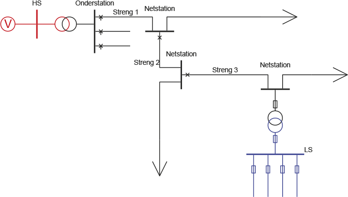Figuur 6.32 illustreert de basisstructuur van een distributienet. Op een van de velden van het onderstation wordt een kabel aangesloten, die het begin is van een hoofdstreng (Streng 1), waarop netstations en klantstations worden aangesloten. Op deze hoofdstreng kan in een netstation een tweede streng (Streng 2) worden aangesloten. Deze streng heeft een eigen beveiliging. Op deze tweede streng wordt soms een derde streng aangesloten, die ook voorzien is van een eigen beveiliging. In de meeste netstations is een distributietransformator aanwezig, voorzien van een beveiliging aan de primaire en secundaire zijde. In het laagspanningscircuit zijn alle afgaande richtingen beveiligd, meestal met smeltveiligheden. In een klantstation wordt een grootverbruiker rechtstreeks op middenspanningsniveau aangesloten. De voedingskabel van deze grootverbruikersaansluiting is beveiligd met een vermogenschakelaar.
Een streng wordt meestal beveiligd met een onafhankelijke maximaal stroom-tijdbeveiliging. De aanspreekwaarde van het beveiligingsrelais moet hoger zijn dan de continu toegelaten stroom Inom van de kabel. Voor de instelling van I> van een streng moet rekening gehouden worden met een bepaalde marge boven de nominale stroomsterkte van de kabel. Deze marge heeft oorspronkelijk te maken met de afvalwaarde van een elektromechanisch relais. Om te voorkomen dat ten gevolge van een kortstondige stroompiek onnodig een afschakelcommando wordt gegeven, moet de afvalwaarde van de beveiliging groter zijn dan de nominale stroomsterkte van de kabel. De afvalwaarde bedraagt 80% van de aanspreekwaarde. Dit geeft voor I> als ondergrens een factor van 1,25. Een nieuw digitaal relais heeft een verhouding aanspreekwaarde/afvalwaarde van 1. Indien de netbeheerder een overbelasting van 20% toestaat en de meetnauwkeurigheid van een stroomtransformator 5% is, komt dit ook overeen met een factor van 1,25 (≈ 1,2 x 1,05). Hiermee wordt het risico geaccepteerd dat de kabel thermisch wordt overbelast. Het voordeel van een ruimere marge is daarentegen dat tijdelijke overbelastingen bij omschakelacties minder vaak tot afschakelingen leiden. De uiteindelijke keuze voor de instelling hangt af van diverse factoren, zoals leeftijd van de kabel en mogelijkheden om de kabelbelasting te monitoren. Voor de eerste streng is de instelling voor I> standaard gelijk aan 1,25 maal de nominale stroom, maar indien het veld met verremeting bewaakt is, is de instelling 1,5 maal de nominale stroom. Dit heeft overigens als consequentie dat stromen die tot 25% groter zijn dan de nominale stroom niet worden afgeschakeld.
De tijdsinstelling wordt gestaffeld van voedingstransformator tot aan de laatste streng. Dit houdt in dat de staffeltijd oploopt naar de voedingsbron toe, gerekend vanaf de beveiliging die zich het verst in het net bevindt. De insteltijden van twee opeenvolgende beveiligingen moeten zodanig zijn dat de beveiliging die zich het dichtst bij de fout bevindt een uitschakelcommando aan de bijbehorende vermogenschakelaar geeft. Deze schakelaar moet de fout afschakelen voordat de volgende beveiliging een afschakelcommando geeft. De tijdsinstelling voor de eerste streng moet zich onder de instelling van de voedingstransformator bevinden en boven de instelling van de tweede en derde streng. De laatste beveiliging heeft de kortste afschakeltijd. Een goede waarde voor de instelling van t> voor de eerste streng is bijvoorbeeld 1,8 s.
Bij de tijdstaffeling van maximaal stroom-tijdbeveiligingen moet rekening gehouden worden met de eigen schakeltijd van de vermogenschakelaar. De uitschakeltijd van een vermogenschakelaar ligt tussen 40 en 80 ms. Vooralsnog houdt men in de praktijk bij de tijdstaffeling een marge aan van 0,3 s.
Kortsluitingen dicht bij het onderstation leiden tot grote kortsluitstromen. Voor het beperken van materiële schade aan de componenten en voor het beperken van de grote spanningsdip elders in het net, worden deze grote kortsluitstromen snel afgeschakeld met een instelling voor I>> en t>>. De stroominstellingen voor de strengen worden onderling gestaffeld. De tijdinstellingen worden gestaffeld met voorliggende en achterliggende beveiligingen.
Voor kortsluitingen in de hoofdstreng tussen het onderstation en de eerstvolgende beveiliging is soms een derde instelling I>>> en t>>> mogelijk, waarbij de tijdinstelling meestal 0 s is. Oude relais hebben deze instelling niet en vaak missen relatief simpele digitale systemen deze instellingmogelijkheid ook. Bij nieuwere beveiliging systemen is deze mogelijkheid standaard.
In de impedantie-geaarde middenspanningsnetten lopen relatief hoge stromen bij een fase-aardfout. De hoogte van deze stroom is afhankelijk van de impedantie van het aardpunt en de foutplaats. Afhankelijk van de kabelsoort en lengte van de streng kan deze stroom lager zijn dan de nominale stroom. De sterpunten van de middenspanningsnetten worden in het onderstation geaard met aardingstransformatoren of sterpuntsspoelen. Hierbij worden de sterpunten bewaakt door een MST beveiliging die de stroom naar aarde meet. Bij een stroom groter dan bijvoorbeeld 50 A kan door overbelasting schade optreden aan het sterpunt indien de fase-aardfout niet in de streng wordt afgeschakeld. De eerste strengen worden daarom beveiligd met bijvoorbeeld een I0> van 50 A en een tijdsinstelling van t0> van 60 s. Voor deze lange tijd (1 minuut) wordt gekozen omdat bij het veranderen van netkoppelingen tijdens het 1-polig schakelen een a-symmetrische stroom kan lopen.
Naast de I0> wordt voor de eerste streng een I0>> ingesteld met een waarde onder de instelling voor I0> van de voedende HS-transformator (500 A / 2,7 s). De tijdsinstelling is gelijk aan de fase instelling t>.
In een onderstation kunnen in verband met de selectiviteit maximaal 3 strengen ‘achter elkaar’ aangesloten worden. In nieuwbouwprojecten worden bij voorkeur geen derde strengen meer aangesloten. De selectiviteit wordt bepaald door de beveiligingsinstellingen van de HS-zijde van de voedingstransformator tot aan de beveiligingsinstellingen van de MS-aansluitingen van distributietransformatoren en A.5 aansluitingen.
In een regelstation of schakelstation kunnen alleen 3 strengen achter elkaar worden aangesloten indien de voedende kabels beveiligd zijn met differentiaalbeveiligingen. Zo niet, is het maximum aantal strengen vanuit een regelstation of schakelstation gelijk aan 2.
Tabel 6.4 geeft een mogelijk schema weer voor de beveiliging van een MS-distributienet, vanaf de voedingstransformator tot aan de derde streng. Hierbij zijn de waarden van I>> voor de transformator gemaximeerd op 4500 A, betrokken op een spanningsniveau van 10 kV. De beveiligingen voor de aansluitingen zijn beschreven in paragraaf 6.2 en voor de MS/LS-transformatoren in paragraaf 6.3.1.
Locatie |
I> |
t> (s) |
I>> |
t>> (s) |
I0> |
t0> (s) |
I0>> |
t0>> (s) |
Transformator HS-zijde |
1,4 x Inom |
3,0 |
2,5 x Inom , max 4500 A (op 10 kV) |
1,5 |
700 A |
3,0 |
||
Transformator MS-zijde |
1,25 x Inom |
2,7 |
2,0 x Inom , max 4000 A (op 10 kV) |
1,2 |
500 A |
2,7 |
||
Eerste streng |
1,25 of 1,5 x Inom |
1,8 |
1900 A |
0,6 |
50 A |
60 |
300 A |
1,8 |
Tweede streng |
1,25 x Inom |
1,5 |
1700 A |
0,3 |
250 A |
1,5 |
||
Derde streng |
1,25 x Inom |
1,2 |
1500 A |
0,0 |
200 A |
1,2 |
Deze instellingen zijn ingevuld voor de beveiligingen van het voorbeeldnet van figuur 6.32. In het net zijn ook de beveiligingen van de distributietransformator en een laagspanningsstreng ingevuld. Figuur 6.33 geeft grafisch de instellingen van alle beveiligingen weer. Alle stromen in de grafiek zijn betrokken op het 10 kV-spanningsniveau.
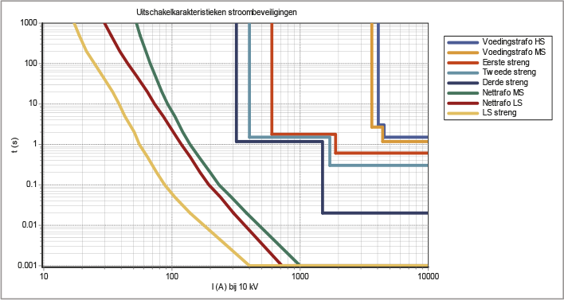In het geval dat de strengen gevoed worden vanuit een regelstation of schakelstation, waarvan de voedende kabels beveiligd zijn met differentiaalbeveiligingen, kunnen maximaal 3 strengen worden aangesloten en is het schema voor de instellingen van de beveiligingen zoals aangegeven in tabel 6.5. In deze tabel is n het aantal voedende parallelle kabels tussen het onderstation en het regel- of schakelstation. Indien de voedende kabels niet beveiligd zijn met differentiaalbeveiligingen, vervalt de derde streng.
Locatie |
I> |
t> (s) |
I>> |
t>> (s) |
I0> |
t0> (s) |
I0>> |
t0>> (s) |
Transformator HS-zijde |
1,4 x Inom |
3,0 |
2,5 x Inom , |
1,5 |
700 A |
3,0 |
||
Transformator MS-zijde |
1,25 x Inom |
2,7 |
2,0 x Inom , |
1,2 |
500 A |
2,7 |
||
Parallelle kabel |
1,5 x Inom |
1,8 |
3600 / n |
0,9 |
400/n |
1,8 |
||
Eerste streng |
1,25 of 1,5 x Inom |
1,5 |
1900 A |
0,6 |
50 A |
60 |
300 A |
1,8 |
Tweede streng |
1,25 x Inom |
1,2 |
1700 A |
0,3 |
250 A |
1,5 |
||
Derde streng |
1,25 x Inom |
1,2 |
1500 A |
0,0 |
200 A |
1,2 |

De tabellen geven een indicatie van een instelplan voor beveiligingen in middenspanningsnetten. Hiervan wordt in de praktijk vanwege historische of bedrijfsfilosofische redenen vaak afgeweken. Figuur 6.34 illustreert de beveiliging van een richting in het middenspanningsdistributienet met behulp van onafhankelijke maximaal stroom-tijdrelais. De maximale stroom in normaal bedrijf is ongeveer 180 A. De nominale stroom van de kabels in de ‘eerste streng’ is 310 A. De ‘eerste streng’ wordt vanuit het onderstation gevoed via een smoorspoel, die beveiligd is met een OMT-relais (zie paragraaf 6.1.5) dat een uitschakelcommando geeft op 1,8 s indien de stroom groter is dan 465 A. Indien de kortsluitstroom groter is dan 1900 A wordt op 0,6 s een uitschakelcommando gegeven.
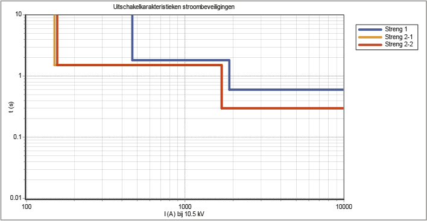Op de eerste streng zijn twee ‘tweede strengen’ aangesloten met een nominale stroom van respectievelijk 120 A en 125 A. Beide ‘tweede strengen’ zijn beveiligd met een OMT-relais. De beveiliging van Streng 2-1 geeft op 1,5 s een uitschakelcommando indien de stroom groter is dan 150 A. Indien de stroom groter is dan 1700 A geeft het relais op 0,3 s een uitschakelcommando. Het relais dat de tweede uitloper beveiligt heeft een instelling voor I> van 156 A. Figuur 6.35 geeft de karakteristieken weer van de drie genoemde beveiligingen.
Duidelijk zichtbaar is dat de karakteristieken van de beveiligingen van Streng 2-1 en Streng 2-2 zich onder de karakteristiek van de voeding bevinden. In het middengebied van de karakteristiek is de marge 0,3 s. Deze instelling is selectief. Aangezien de beveiligingen van Streng 2-1 en Streng 2-2 zich niet achter elkaar bevinden (het zijn beide ‘tweede strengen’), hoeven deze geen marge ten opzichte van elkaar te hebben.
Storingen dichtbij het onderstation hebben de grootste kortsluitstroom en worden met de instellingen van tabel 6.4 en tabel 6.5 na 0,6 s afgeschakeld. Deze storingen veroorzaken gedurende de 0,6 s schade aan componenten en een spanningsdip voor alle aangesloten klanten op de installatie van het onderstation. Om deze effecten te verminderen wordt een I>>> ingesteld om fouten dichtbij het onderstation met grote kortsluitstromen direct af te schakelen. Mocht de marge om I>>> in te stellen te klein zijn, waardoor er een risico ontstaat dat de instelling ook reageert op fouten in de tweede strengen, dan zal de instelling van I>>> achterwege blijven. In dat geval wordt gekozen voor selectiviteit in plaats van het voorkomen van grote spanningsdips.
Het distributienet wordt zoveel mogelijk in ringen aangelegd, zodat bij een storing, na het vrijschakelen van het gestoorde netdeel, omgeschakeld kan worden voor het herstel van de levering. In situaties zoals bij een uitloper is dat niet mogelijk en moeten de afgeschakelde aansluitingen via een aggregaat gevoed worden. Bij een ringstructuur wordt het net straalvormig bedreven maar zijn de afschermingen van de kabels wel in de ring met elkaar verbonden. Bij een uitloper is dat niet mogelijk. In een geaard distributienet kan bij een fase-aardsluiting de aardfoutstroom via de afschermingen van de kabels terugvloeien naar het geaarde sterpunt. In een ringstructuur is het retourpad vermaasd en kan de aardfoutstroom over meerdere wegen terugvloeien. Bij een uitloper is maar één retourpad beschikbaar.
Bij een fase-aardfout verhoogt de spanning van het scherm van de kabel ten opzichte van de aarde. In de netstations kunnen de schermen van de MS-kabels verbonden zijn met het aardingssysteem van het LS-net. Indien dat het geval is, resulteert een spanningsverhoging op het scherm van de MS-kabel in een verhoogde aanrakingsspanning bij de aangeslotenen in het LS-net. Doordat er bij een uitloper maar één retourpad voor de aardfoutstroom is, is de retourimpedantie groter waardoor de potentiaalverhoging groter is dan bij een fase-aardfout in de ringstructuur. De hoogte van de aanrakingsspanning en de daarbij behorende uitschakeltijd is vastgelegd in NEN 1041 en is nader beschreven in hoofdstuk 5. In de praktijk is gebleken dat bij toepassing van sommige typen kabel, zoals 3*240 AL XLPE met 70 mm2 aardscherm, de aanrakingsspanning hoger kan worden dan toegestaan. Deze situatie is afgebeeld in figuur 6.36.
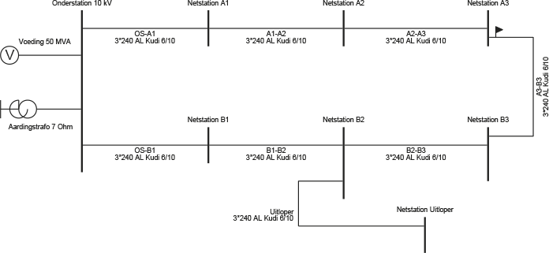In dit voorbeeldnet is bij het onderstation een aarding van 0,2 Ω toegepast en bij ieder netstation een aarding van 2 Ω. Indien de fase-aardsluiting zich in de ring bevindt ter hoogte van ‘Netstation B3’ is de potentiaalverhoging op het scherm van de kabel 270 V. Bij een fase-aardsluiting ter hoogte van ‘Netstation Uitloper’ is de potentiaalverhoging 416 V. Volgens de norm moet bij deze spanning de fout binnen 0,3 s zijn afgeschakeld. Daarom wordt de uitloper voorzien van een vermogenschakelaar en een beveiliging, waarvan t0> niet ingesteld wordt op t>, maar standaard op 0,3 s. De a-selectiviteit die hiermee ontstaat met eventuele aansluitingen wordt aanvaard omdat veiligheid voor selectiviteit gaat.
Zeer veel middenspanningsnetten hebben een zwevend sterpunt. In deze netten hoeft een fase-aardfout niet onmiddellijk te worden afgeschakeld omdat de foutstroom niet groot is. In zwevende netten wordt de foutstroom bij kortsluiting van een fase met aarde voornamelijk bepaald door de totale capaciteit van alle gekoppelde kabels. Tijdens deze kortsluiting is de spanning op de kortgesloten fase gelijk aan nul en is de spanning op de gezonde twee fasen ten opzichte van aarde gelijk aan de gekoppelde spanning. Deze verhoogde spanning kan met name bij kabels leiden tot een doorslag elders in het net (‘cross-country’). Hierdoor gaat de fase-aardsluiting over in een complexe tweefasen-aardsluiting. Om deze ongewenste situatie van gekoppelde spanning op de fasen van de kabels niet te lang te laten bestaan, wordt een fase-aardfout toch na enige tijd afgeschakeld. Ook kan het zijn dat de capacitieve stroom leidt tot thermische overbelasting van het kabelscherm. In dat geval moet het ontwerp van het distributienet voorzien in een impedantie-geaard net, waardoor de fout kan worden gedetecteerd en afgeschakeld. Een fase-aardfout kan worden gedetecteerd door de systeemspanning te meten of door de drie fasestromen te meten.
De detectie met behulp van de systeemspanning vindt plaats door de drie afzonderlijke fasespanningen te meten en vectoriëel op te tellen. De primaire wikkelingen van drie spanningstransformatoren hebben een gezamenlijk geaard sterpunt. De secundaire wikkelingen zijn geschakeld in een open driehoekswikkeling. In de normale bedrijfstoestand is de vectoriële som van de drie fasespanningen nul. Bij een fase-aardfout is de som van de fasespanningen aanzienlijk, waardoor deze schakeling een grote gevoeligheid heeft voor fase-aardfouten.
De fase-aardfout kan ook worden gedetecteerd door de drie stromen te meten en vectoriëel op te tellen. Dit gebeurt in een Holmgreen-schakeling, waarin de secundaire wikkelingen van de drie stroomtransformatoren parallel zijn geschakeld en aangesloten op het aardfoutrelais. In de normale bedrijfstoestand is de vectoriële som van de stromen gelijk aan nul. Tijdens een fase-aardfout lekt de stroom van de gestoorde fase via de aarde weg, waardoor de som van de stromen niet meer gelijk aan nul is. Deze meting reageert alleen op kortsluitingen met aardcontact, waardoor de instelling onafhankelijk van de nominale stroom vrij klein gekozen kan worden. In praktijk blijkt dit niet gevoeliger te zijn dan 10 à 20% van de nominale stroom.
De beschikbaarheid van zowel de beveiliging als de vermogensschakelaar is niet 100%. Dit betekent dat er een kans is dat ze niet functioneren of dat ze onterecht afschakelen. Door meerdere beveiligingen in te zetten kan de beschikbaarheid van de beveiliging voor het afschakelen worden verhoogd. Echter, hierdoor neemt de kans op een onterechte afschakeling ook weer toe. Bij een kortsluiting moet in beginsel alleen het gestoorde netdeel worden uitgeschakeld. Hiermee wordt bereikt dat er zo weinig mogelijk klanten worden getroffen. Indien dat door weigering van beveiliging of vermogenschakelaar niet gebeurt, moet een andere beveiliging afschakelen.
Een goede oplossing voor het mogelijk niet functioneren van een beveiliging kan worden gevonden door de beveiliging op te bouwen uit een beveiliging en een back-up beveiliging. De back-up beveiliging wordt bij voorkeur gerealiseerd met beveiligingen die elders zijn aangebracht voor andere primaire objecten. Ook voor een weigerende vermogenschakelaar moet gekeken worden naar een alternatief. Hiervoor kan extra apparatuur (bijvoorbeeld een schakelaar reserve beveiliging) worden aangebracht om het weigeren van de vermogenschakelaar te ondervangen. De kans dat de beveiliging en de back-up beveiliging gelijktijdig weigeren is zeer klein. In het huidige netontwerp wordt hier geen rekening mee gehouden.
De back-up voor de derde streng wordt verzorgd door de beveiliging van de tweede streng. De back-up voor de tweede streng wordt verzorgd door de beveiliging van de eerste streng. In de eerste streng van een MS-distributienet zijn twee MST beveiligingen aanwezig die beide dezelfde vermogenschakelaar besturen. Er is veelal geen back-up door een bovenliggende beveiliging. Daarom is in dat geval een schakelaar reservebeveiliging (SRB) nodig om bij weigering van een afgaande vermogenschakelaar de fout toch uit te schakelen. Indien een afgaande vermogenschakelaar niet afschakelt, geeft de SRB beveiliging een uitschakelcommando aan alle op de rail aangesloten vermogenschakelaars.
Spanningsbeveiliging en frequentiebeveiliging zijn in principe bedoeld om het aangesloten elektrisch materieel te beschermen. Het elektriciteitsnet dat deze apparatuur voedt, zal er in het algemeen geen probleem mee hebben om een overbelaste transformator of motor al dan niet bij een te lage spanning te voeden. Laat men deze abnormale bedrijfssituaties voortbestaan, dan zullen deze uiteindelijk ontaarden in een kortsluiting. Het aangesloten apparaat is dan defect; er gaan grote stromen lopen in het distributienet die uiteindelijk tot oververhitting van kabels, transformator en schakelaars kunnen leiden, waardoor ook deze defect raken. De beveiliging in het overdrachtspunt moet overbelasting van het net van de netbeheerder beschermen. Er wordt dus beveiligd om schade aan elektrisch materieel te voorkomen en om de schade op de foutplaats zelf te beperken en schade aan andere netdelen te voorkomen.
Onderspanningsbeveiliging: bij een verlaging van de netspanning neemt bij gelijkblijvend vermogen de stroom toe, waardoor overbelasting kan ontstaan. Dit wordt met name veroorzaakt door motoren die bij een lagere voedingsspanning in een ongunstig werkgebied geraken. In eerste instantie zullen de motoren ten gevolge van de verlaagde spanning steeds meer stroom gaan trekken om het gewenste aandrijvende koppel te kunnen blijven leveren. Vervolgens zullen zij oververhit raken en doorbranden.
Overspanningsbeveiliging: bij een verhoging van de netspanning neemt bij gelijkblijvend vermogen de stroom af. In motoren en transformatoren zal het ijzerverlies toenemen. Een te hoge netspanning leidt ertoe dat aangesloten apparatuur te warm kan worden. Bovendien zullen er isolatiedefecten optreden.
Frequentiebeveiliging: een te lage of te hoge frequentie veroorzaakt dat transformatoren aan secundaire zijde niet meer de juiste spanning hebben. Bovendien ontregelt een verkeerde frequentie het gedrag van motoren.
Generatoren in het middenspanningsnet leveren tijdens een kortsluiting een bijdrage aan de kortsluitstroom. Voor een goede werking van de beveiliging van de strengen moeten generatoren in geval van een kortsluiting in het middenspanningsnet onmiddellijk afschakelen. Vanwege de veiligheid rondom het gestoorde netdeel mogen decentrale opwekkers niet opnieuw op het spanningsloze netwerk inschakelen. De vermogenschakelaars zijn hiervoor voorzien van een extra beveiliging. Ook mogen decentrale opwekkers het net niet in eilandbedrijf voeden. Het in eilandbedrijf werkende deelnet en het hoofdnet zijn namelijk niet gesynchroniseerd. Om te kunnen koppelen is synchronisatie-apparatuur nodig. In de Netcode (Netcode, 2009) is beschreven aan welke eisen aangeslotenen met decentrale opwekking moeten voldoen.
Bij de toename van de hoeveelheid en de concentratie van decentrale opwekking kan een aantal problemen voor de beveiliging in het net optreden, zoals ‘onbedoeld eilandbedrijf’, ‘foutief afschakelen’ en ‘verblinden van de beveiliging’ (Coster, 2007). Met name het verblinden van de beveiliging en het foutief afschakelen worden gezien als serieuze bedreigingen.
De kans op het onbedoeld in eilandbedrijf geraken is klein. De decentrale opwekeenheden zijn niet voorzien van een automatische frequentie/vermogensregeling. Hierdoor kunnen zij niet regelen op de onbalans tussen vraag en aanbod, wat in eilandbedrijf noodzakelijk is. Alle productie-eenheden zullen bij een grote afwijking van de frequentie met behulp van hun frequentiebeveiligingen afschakelen. Decentrale opwekeenheden zijn juist voorzien van stroom- en spanningsbeveiligingen om de toestand van eilandbedrijf te voorkomen.
De stroom- en spanningsbeveiliging van de decentrale opwekeenheden zijn zodanig afgesteld dat zij snel de opwekeenheden afschakelen op grond van een te grote kortsluitstroombijdrage of een te grote spanningsdip. Dit afschakelen van opwekeenheden kan leiden tot grote plotselinge en ongewenste veranderingen in de vermogensstromen.
In geval van een kortsluiting in een van de afgaande strengen, zullen alle decentrale opwekkers in het MS-net bijdagen aan de kortsluitstroom. Als de kortsluitstroombijdrage groter is dan de aanspreekwaarde van de maximaal stroom-tijdbeveiliging van de strengen, dan zal de gezonde streng met de decentrale opwekker afgeschakeld worden. De kans hierop neemt toe naarmate de decentrale opwekker zich dichter bij het onder-, regel- of schakelstation bevindt (zie figuur 6.37).
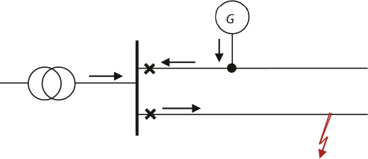De oplossing voor dit probleem is eenvoudig door in de streng met de decentrale opwekker gebruik te maken van een maximaal stroom-tijdbeveiliging met energierichting. Bovendien, indien de generator door de onderspanningbeveiliging of door de frequentiebeveiliging eerder afschakelt dan de stroombeveiliging in de streng, zal dit probleem zich niet voordoen.
Als een kortsluiting optreedt in een streng waar zich decentrale opwekking bevindt, zullen de generatoren bijdragen aan de kortsluitstroom en neemt de bijdrage vanuit het voedende net aan de kortsluitstroom evenredig af. Figuur 6.38 geeft een overzicht van de situatie.
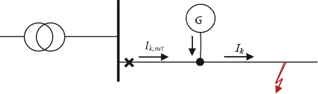Door de afname van de bijdrage vanuit het voedende net aan de kortsluitstroom meet de beveiliging aan het begin van de streng een kleinere kortsluitstroom dan die op de foutplaats. Hierdoor is het mogelijk dat deze beveiliging niet aanspreekt. De kortsluitbijdrage vanuit de voeding neemt af naarmate het kortsluitvermogen van de generator in verhouding tot het kortsluitvermogen van de voeding toeneemt. Ook neemt de kortsluitbijdrage vanuit de voeding af naarmate de generator zich dichter bij de voeding bevindt. Dit wordt bepaald door de verhoudingen van de impedanties in de kortsluitstroomberekening (Coster, 2007). De berekeningen van figuur 6.39 en figuur 6.40 zijn uitgevoerd voor een middenspanningsstreng, die gevoed wordt via een 50 MVA transformator. De streng is 20 km lang. De berekende kortsluitstroom is 1758 A.
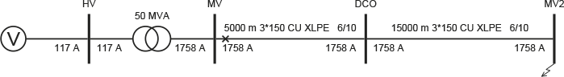Indien op 5 km afstand van de voeding een generator van 2 MVA wordt aangesloten, blijkt de kortsluitbijdrage vanuit de voeding met 122 A te dalen naar 1636 A.
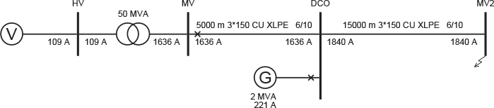De oorzaak ligt in de parallelschakeling van de impedanties van het voedende gedeelte en van de generator. Dit effect is het sterkst in relatief zwakke netten met veel decentrale opwekking. Indien de beveiliging een kortsluitstroom meet die kleiner is dan de aanspreekwaarde, zal de kortsluiting in eerste instantie niet afgeschakeld worden. Indien de kortsluitstroombijdrage van de generator groter is dan de aanspreekwaarde van de generatorbeveiliging, zal deze eerst afschakelen, waarna de kortsluitstroombijdrage van het voedende net weer toeneemt en de beveiliging alsnog zal aanspreken. Het is geen wenselijke situatie dat de beveiliging van de streng afhangt van het al dan niet afschakelen van de decentrale opwekkers. In deze situatie moeten de decentrale opwekkers bij een kortsluiting in het net door een onderspanningbeveiliging onmiddellijk worden afgeschakeld. In praktijk echter is de kans op het verblinden van de beveiliging in Nederlandse netten zeer klein (Coster, 2010).
De instellingen voor de beveiliging van decentrale opwekeenheden hangt af van de eenheidsgrootte en het spanningsniveau, waarop zij zijn aangesloten. Tabel 6.6 geeft een overzicht van mogelijke beveiligingsinstellingen, die herleid zijn uit de Systeemcode voor opwekeenheden die op laagspannings- en middenspanningsniveau zijn aangesloten.
Opwekeenheid |
Onderspannings-beveiliging |
Overspannings-beveiliging |
Maximaal stroom-tijdbeveiliging |
Frequentie-beveiliging |
LS: Generator of vermogenselektronische omzetter |
U< = 80% |
U> = 106% |
I> = 1,25 x Inom |
F<> = 2 Hz |
LS: Generator of vermogenselektronische omzetter |
U< = 80% |
U> = 106% |
I> = 1,25 x Inom |
F<> = 2 Hz |
MS: Generator of vermogenselektronische omzetter |
U< = 80% |
U> = 106% |
I> = 1,25 x Inom |
F<> = 2 Hz |
Voor opwekeenheden die op middenspanningsniveau zijn aangesloten geeft de Systeemcode (Systeemcode, 2009, Bijlage 3) een overzicht voor abnormale bedrijfssituaties, waarin niet direct van het net mag worden geschakeld. Dit betreft spanningen tussen 80 en 105% van de nominale waarde en frequenties tussen 48 en 51 Hz.
Onderscheiden worden de gebieden a, b, c en d, waarvoor geldt:
a) nominaal vermogen leveren gedurende onbeperkte tijd
b) nominaal vermogen leveren gedurende 15 minuten; vervolgens gedurende 5 minuten parallel aan het net blijven
c) 90% van het nominale vermogen leveren gedurende 10 seconden; vervolgens gedurende 5 minuten parallel aan het net blijven
d) gedurende 5 minuten parallel aan het net blijven
Een derde meer theoretische situatie doet zich voor in een MS-streng waar decentrale opwekking een grote belasting voedt die verderop in dezelfde streng aanwezig is. Indien deze belasting, bijvoorbeeld door afspraken met de decentrale producent, alleen tijdens productie van de generator vermogen afneemt, wordt deze stroom niet door de beveiliging in het onderstation gezien. Hierdoor is het mogelijk dat het netdeel tussen producent en afnemer overbelast raakt zonder dat dit opgemerkt wordt.
Figuur 6.42 toont de situatie dat de verbinding tussen netstations DCO en MV2 door een stroom van 125% van de nominale waarde overbelast is, terwijl de beveiliging in het onderstation een stroom van 89% van de nominale waarde ziet en met een instelling van 1,25 x Inom niet zal afschakelen.
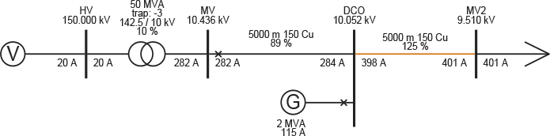Het ontwerpen van de beveiliging en het navolgend instellen van beveiligingsrelais is een tijdrovende bezigheid waarbij ervaring een grote rol speelt. Om die reden worden door de bedrijven zelf richtlijnen voor standaardsituaties opgesteld. Het is echter onvermijdelijk dat er gerekend moet worden om tot de juiste instellingen te komen. In het verleden was dat veelal handmatig werk, waarbij elke situatie afzonderlijk werd doorgerekend en beoordeeld. Sommige bedrijven hebben daar nu zelf software voor ontwikkeld (Rombouts, 1998).
Daarnaast is er algemeen beschikbare software voorhanden, waarmee de instellingen van beveiligingen getoetst kunnen worden. Deze software voert kortsluitberekeningen uit voor storingen op knooppunten en in kabels van het netwerk. Hierbij kan de impedantie op de foutplaats worden gevarieerd. De software rapporteert het gedrag van de beveiligingen en toetst de selectiviteit.
Beveiligingsfuncties worden langzamerhand steeds meer geïntegreerd in stationsautomatisering. Het doel is op termijn het systeem van losse functionele beveiligingsunits te verenigen in een enkel eenvoudig en transparant beveiligingssysteem. Deze ontwikkeling is ingegeven door de problematiek rond het onderhouden en vervangen van de beveiligings- en besturingsapparatuur in een onderstation. Na het bereiken van de technische levensduur van de beveiligingsapparatuur is het soms moeilijk aan vervangende componenten te komen. Vergelijkbare apparaten van alternatieve leveranciers communiceren niet altijd op de gewenste wijze met de bestaande structuur. Bovendien is er behoefte aan nieuwe functionaliteiten, die moeilijk te integreren zijn in de bestaande stationsautomatisering.
Ook bestaat er een toenemende behoefte om meer dan tot op heden gebruikelijk in de MS-netten te meten en op basis van meetgegevens lokaal te besturen. Door toepassing van ICT-technologie en glasvezelcommunicatie kunnen de beslissingsfuncties in één geïntegreerd systeem met een open communicatieprotocol worden ondergebracht, terwijl het daadwerkelijke meten van stroom en spanning door eenvoudige meetapparatuur in de velden van het onderstation blijft ondergebracht. Een modern systeem dat in Nederland al op diverse plaatsen op bescheiden schaal wordt toegepast, combineert functies voor beveiliging, foutplaatslocalisatie, power quality, monitoring en besturing. Het doel van dit systeem is de beveiliging en de besturing in een onderstation eenvoudig en goedkoop te maken (Riet, 2005). Meer over dit onderwerp in paragraaf 14.8 en in hoofdstuk 15 over intelligente netten.
Phase to Phase is onderdeel van Technolution. © 2009-2021